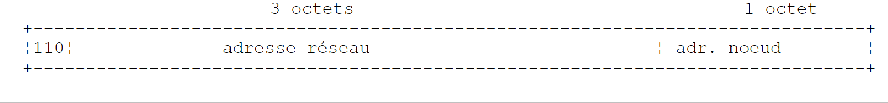
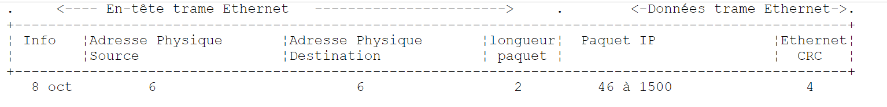
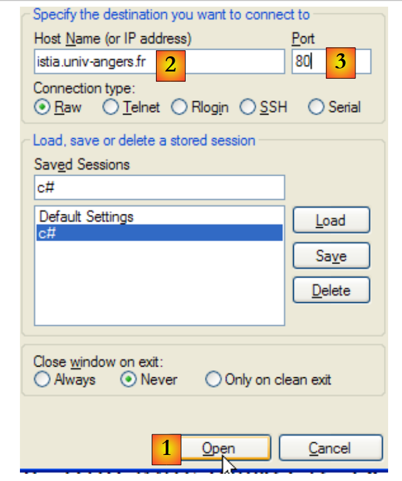
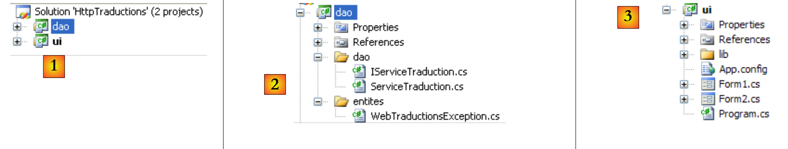
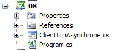
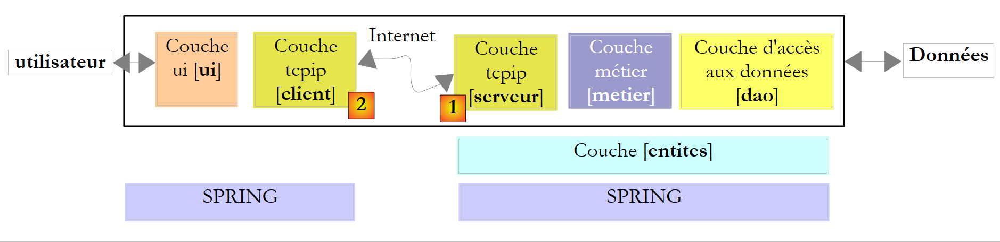

11. Web Development
11.1. Overview
11.1.1. Internet Protocols
Here we provide an introduction to Internet communication protocols, also known as the TCP/IP (Transmission Control Protocol/Internet Protocol) suite, named after its two main protocols. It may be helpful for the reader to have a general understanding of how networks work, particularly TCP/IP protocols, before tackling the development of distributed applications. The following text is a partial translation of a passage found in NOVELL’s “LAN Workplace for DOS – Administrator’s Guide,” a document from the early 1990s.
The general concept of creating a network of heterogeneous computers stems from research conducted by DARPA (Defense Advanced Research Projects Agency) in the United States. DARPA developed the suite of protocols known as TCP/IP, which allows heterogeneous machines to communicate with one another. These protocols were tested on a network called ARPAnet, which later became the Internet. The TCP/IP protocols define formats and rules for transmission and reception that are independent of the network architecture and the hardware used.
The network designed by DARPA and managed by TCP/IP protocols is a packet-switched network. Such a network transmits information over the network in small pieces called packets. Thus, if a computer transmits a large file, it will be broken down into small pieces that are sent over the network to be reassembled at the destination. TCP/IP defines the format of these packets, namely:
- source of the packet
- destination
- length
- type
11.1.2. The OSI Model
TCP/IP protocols generally follow the open network model known as OSI (Open Systems Interconnection Reference Model) defined by the ISO (International Standards Organization). This model describes an ideal network where communication between machines can be represented by a seven-layer model:
 |
Each layer receives services from the layer below it and provides its own services to the layer above it. Suppose two applications located on different machines A and B want to communicate: they do so at the Application layer. They do not need to know all the details of how the network works: each application passes the information it wishes to transmit to the layer below it: the Presentation layer. The application therefore only needs to know the rules for interfacing with the Presentation layer.
Once the information is in the Presentation layer, it is passed according to other rules to the Session layer, and so on, until the information reaches the physical medium and is physically transmitted to the destination machine. There, it undergoes the reverse process of what it underwent on the sending machine.
At each layer, the sender process responsible for sending the information sends it to a receiver process on the other machine belonging to the same layer as itself. It does so according to certain rules known as the layer protocol. We therefore have the following final communication diagram:
 |
The roles of the different layers are as follows:
Ensures the transmission of bits over a physical medium. This layer includes data processing terminal equipment (DPTE) such as terminals or computers, as well as data circuit termination equipment (DCTE) such as modulators/demodulators, multiplexers, and concentrators. Key considerations at this level are:
| |
Hides the physical characteristics of the Physical Layer. Detects and corrects transmission errors. | |
Manages the path that information sent over the network must follow. This is called routing: determining the route that information must take to reach its destination. | |
Enables communication between two applications, whereas the preceding layers only allowed communication between machines. One service provided by this layer is multiplexing: the transport layer can use a single network connection (between machines) to transmit data belonging to multiple applications. | |
This layer provides services that allow an application to open and maintain a working session on a remote machine. | |
It aims to standardize the representation of data across different machines. Thus, data originating from machine A will be "formatted" by machine A’s Presentation layer according to a standard format before being sent over the network. Upon reaching the Presentation layer of the destination machine B, which will recognize them thanks to their standard format, they will be formatted differently so that the application on machine B can recognize them. | |
At this level, we find applications that are generally close to the user, such as email or file transfer. |
11.1.3. The TCP/IP Model
The OSI model is an ideal model that has never been fully realized. The TCP/IP protocol suite approximates it in the following way:
 |
Physical Layer
In local area networks, Ethernet or Token Ring technology is generally used. We will focus here solely on Ethernet technology.
Ethernet
This is the name given to a packet-switched local area network technology invented at Xerox PARC in the early 1970s and standardized by Xerox, Intel, and Digital Equipment in 1978. The network physically consists of a coaxial cable approximately 1.27 cm in diameter and up to 500 m in length. It can be extended using repeaters, with no more than two repeaters separating any two machines. The cable is passive: all active components are located on the machines connected to the cable. Each machine is connected to the cable via a network interface card comprising:
- a transceiver that detects the presence of signals on the cable and converts analog signals to digital signals and vice versa.
- a coupler that receives digital signals from the transceiver and transmits them to the computer for processing, or vice versa.
The main features of Ethernet technology are as follows:
- Capacity of 10 megabits per second.
- Bus topology: all machines are connected to the same cable
 |
- Broadcast network—A transmitting machine sends information over the cable with the address of the receiving machine. All connected machines then receive this information, and only the intended recipient retains it.
- The access method is as follows: the transmitter wishing to transmit listens to the cable—it then detects whether or not a carrier wave is present, the presence of which would indicate that a transmission is in progress. This is known as the CSMA (Carrier Sense Multiple Access) technique. In the absence of a carrier, a transmitter may decide to transmit in turn. Multiple transmitters may make this decision. The transmitted signals mix together: this is called a collision. The transmitter detects this situation: while transmitting over the cable, it also listens to what is actually passing through it. If it detects that the information traveling over the cable is not the one it transmitted, it concludes that a collision has occurred and will stop transmitting. The other transmitters that were transmitting will do the same. Each will resume transmission after a random delay depending on the individual transmitter. This technique is called CD (Collision Detect). The access method is thus called CSMA/CD.
- 48-bit addressing. Each machine has an address, referred to here as a physical address, which is written on the card connecting it to the cable. This address is called the machine’s Ethernet address.
Network Layer
At this layer, we find the IP, ICMP, ARP, and RARP protocols.
Delivers packets between two network nodes | |
ICMP facilitates communication between the IP protocol program on one machine and that on another machine. It is therefore a message exchange protocol within the IP protocol itself. | |
maps a machine's Internet address to its physical address | |
maps a machine's physical address to its Internet address |
Transport/Session Layers
This layer includes the following protocols:
Ensures reliable delivery of information between two clients | |
Ensures unreliable delivery of information between two clients |
Application/Presentation/Session Layers
Various protocols are found here:
A terminal emulator that allows machine A to connect to machine B as a terminal | |
Enables file transfers | |
enables file transfers | |
enables the exchange of messages between network users | |
converts a machine name into the machine's IP address | |
Created by Sun Microsystems, it specifies a standard, machine-independent data representation | |
Also defined by Sun, this is a communication protocol between remote applications, independent of the transport layer. This protocol is important: it frees the programmer from having to know the details of the transport layer and makes applications portable. This protocol is based on the XDR protocol | |
Also defined by Sun, this protocol allows one machine to "see" the file system of another machine. It is based on the preceding RPC protocol |
11.1.4. How Internet Protocols Work
Applications developed in the TCP/IP environment generally use several of the protocols in this environment. An application program communicates with the highest layer of the protocols. This layer passes the information to the layer below it, and so on, until it reaches the physical medium. There, the information is physically transferred to the destination machine, where it will pass through the same layers again, in the opposite direction this time, until it reaches the application intended to receive the sent information. The following diagram shows the path of the information:
 |
Let’s take an example: the FTP application, defined at the Application layer, which enables file transfers between machines.
- The application delivers a sequence of bytes to be transmitted to the transport layer.
- The transport layer divides this sequence of bytes into TCP segments and adds the segment number to the beginning of each segment. The segments are passed to the Network layer, which is governed by the IP protocol.
- The IP layer creates a packet encapsulating the received TCP segment. At the header of this packet, it places the Internet addresses of the source and destination machines. It also determines the physical address of the destination machine. The entire packet is passed to the Data Link & Physical Layer, i.e., to the network card that connects the machine to the physical network.
- There, the IP packet is in turn encapsulated in a physical frame and sent to its recipient over the cable.
- On the destination machine, the Data Link & Physical Layer does the opposite: it decapsulates the IP packet from the physical frame and passes it to the IP layer.
- The IP layer verifies that the packet is correct: it calculates a checksum based on the received bits, which it must find in the packet header. If this is not the case, the packet is rejected.
- If the packet is deemed valid, the IP layer decapsulates the TCP segment contained within it and passes it up to the transport layer.
- The transport layer—the TCP layer in our example—examines the segment number to ensure the segments are in the correct order.
- It also calculates a checksum for the TCP segment. If it is found to be correct, the TCP layer sends an acknowledgment to the source machine; otherwise, the TCP segment is rejected.
- All that remains for the TCP layer to do is to transmit the data portion of the segment to the application intended to receive it in the layer above. ### 11.1.5. Addressing Issues on the Internet
A network node can be a computer, a smart printer, a file server—anything, in fact, that can communicate using TCP/IP protocols. Each node has a physical address with a format that depends on the type of network. On an Ethernet network, the physical address is encoded over 6 bytes. An X.25 network address is a 14-digit number.
A node’s Internet address is a logical address: it is independent of the hardware and network used. It is a 4-byte address that identifies both a local network and a node on that network. The Internet address is usually represented as four numbers—the values of the four bytes—separated by a dot. Thus, ; the address of the machine Lagaffe at the Faculty of Sciences in Angers is 193.49.144.1, and that of the machine Liny is 193.49.144.9. We can deduce that the Internet address of the local network is 193.49.144.0. There can be up to 254 nodes on this network.
Because Internet addresses or IP addresses are independent of the network, a machine on network A can communicate with a machine on network B without concerning itself with the type of network it is on: it simply needs to know its IP address. The IP protocol of each network handles the IP address <--> physical address conversion in both directions.
All IP addresses must be unique. In France, INRIA is responsible for assigning IP addresses. In fact, this organization assigns an address to your local network, for example 193.49.144.0 for the network of the Faculty of Sciences in Angers. The administrator of this network can then assign the IP addresses 193.49.144.1 through 193.49.144.254 as they see fit. This address is generally stored in a specific file on each machine connected to the network.
11.1.5.1. IP Address Classes
An IP address is a sequence of 4 bytes, often written as I1.I2.I3.I4, which actually contains two addresses:
- the network address
- the address of a node on that network
Depending on the size of these two fields, IP addresses are divided into 3 classes: classes A, B, and C.
Class A
The IP address: I1.I2.I3.I4 has the form R1.N1.N2.N3 where
R1 is the network address
N1.N2.N3 is the address of a machine on that network
More precisely, the format of a Class A IP address is as follows:
 |
The network address is 7 bits long and the host address is 24 bits long. There can therefore be 127 Class A networks, each containing up to 2²⁴ hosts.
Class B
Here, the IP address I1.I2.I3.I4 is in the form R1.R2.N1.N2, where
R1.R2 is the network address
N1.N2 is the address of a machine on that network
More precisely, the format of a Class B IP address is as follows:
 |
The network address is 2 bytes (14 bits exactly), as is the node address. There can therefore be 2¹⁴ Class B networks, each containing up to 2¹⁶ nodes.
Class C
In this class, the IP address: I1.I2.I3.I4 has the form R1.R2.R3.N1 where
R1.R2.R3 is the network address
N1 is the address of a machine on that network
More precisely, the format of a Class C IP address is as follows:
 |
The network address is 3 bytes (minus 3 bits) and the host address is 1 byte. There can therefore be 2²¹ Class C networks, each containing up to 256 hosts.
Since the address of the Lagaffe machine at the Angers Faculty of Sciences is 193.49.144.1, we see that the most significant byte is 193, which is 11000001 in binary. We can deduce that the network is a Class C network.
Reserved Addresses
- Some IP addresses are network addresses rather than node addresses within the network. These are the ones where the node address is set to 0. Thus, the address 193.49.144.0 is the IP address of the Angers Faculty of Sciences network. Consequently, no node in a network can have the address zero.
- When the node address in an IP address consists entirely of 1s, it is a broadcast address: this address refers to all nodes on the network.
- In a Class C network, which theoretically allows for 2⁸ = 256 nodes, if we remove the two prohibited addresses, we are left with only 254 authorized addresses. #### 11.1.5.2. Internet Address <--> Physical Address Conversion Protocols
We have seen that when data is transmitted from one machine to another, it is encapsulated into packets as it passes through the IP layer. These packets have the following form:
 |
The IP packet therefore contains the Internet addresses of the source and destination machines. When this packet is transmitted to the layer responsible for sending it over the physical network, additional information is added to form the physical frame that will ultimately be sent over the network. For example, the format of a frame on an Ethernet network is as follows:
 |
In the final frame, there are the physical addresses of the source and destination machines. How are they obtained?
The sending machine, knowing the IP address of the machine it wants to communicate with, obtains the latter’s physical address by using a specific protocol called ARP (Address Resolution Protocol).
- It sends a special type of packet called an ARP packet containing the IP address of the machine whose physical address is being sought. It also includes its own IP address and physical address in the packet.
- This packet is sent to all nodes on the network.
- These nodes recognize the special nature of the packet. The node that recognizes its IP address in the packet responds by sending its physical address to the packet’s sender. How can it do this? It found the sender’s IP and physical addresses in the packet.
- The sender thus receives the physical address it was looking for. It stores it in memory so it can use it later if other packets need to be sent to the same recipient.
A machine’s IP address is normally stored in one of its configuration files, which it can consult to retrieve it. This address can be changed: simply edit the file. The physical address, however, is stored in the network card’s memory and cannot be changed.
When an administrator wants to reorganize the network, they may need to change the IP addresses of all the nodes and thus edit the various configuration files for each node. This can be tedious and prone to errors if there are many machines. One method involves not assigning an IP address to the machines: instead, a special code is entered into the file where the machine would normally find its IP address. Upon discovering it has no IP address, the machine requests one using a protocol called RARP (Reverse Address Resolution Protocol). It then sends a special packet called a RARP packet over the network—similar to the previous ARP packet—containing its physical address. This packet is sent to all nodes that recognize a RARP packet. One of them, called the RARP server, maintains a file containing the physical address <--> IP address mappings for all nodes. It then responds to the sender of the RARP packet by sending back its IP address. An administrator wishing to reconfigure their network therefore only needs to edit the RARP server’s mapping file. The RARP server must normally have a fixed IP address that it must be able to know without having to use the RARP protocol itself.
11.1.6. The network layer, known as the Internet Protocol (IP) layer
The IP (Internet Protocol) defines the format that packets must take and how they must be handled during transmission or reception. This specific type of packet is called an IP datagram. We have already introduced it:
 |
The important point is that, in addition to the data to be transmitted, the IP datagram contains the Internet addresses of the source and destination machines. This way, the receiving machine knows who is sending it a message.
Unlike a network frame, whose length is determined by the physical characteristics of the network it travels over, the length of the IP datagram is fixed by the software and will therefore be the same across different physical networks. We have seen that as we move down from the network layer to the physical layer, the IP datagram is encapsulated within a physical frame. We gave the example of the physical frame of an Ethernet network:
 |
Physical frames travel from node to node toward their destination, which may not be on the same physical network as the sending machine. The IP packet can therefore be successively encapsulated in different physical frames at the nodes that connect two networks of different types. It is also possible that the IP packet is too large to be encapsulated in a single physical frame. The IP software on the node where this problem occurs then breaks the IP packet into fragments according to specific rules, each of which is then sent over the physical network. They will only be reassembled at their final destination.
11.1.6.1. Routing
Routing is the method of directing IP packets to their destination. There are two methods: direct routing and indirect routing.
Direct routing
Direct routing refers to the transmission of an IP packet directly from the sender to the recipient within the same network:
- The machine sending an IP datagram has the recipient’s IP address.
- It obtains the physical address of the destination using the ARP protocol or from its tables, if that address has already been obtained.
- It sends the packet over the network to that physical address.
Indirect routing
Indirect routing refers to the transmission of an IP packet to a destination located on a network other than the one to which the sender belongs. In this case, the network address portions of the source and destination machines’ IP addresses are different. The source machine recognizes this. It then sends the packet to a special node called a router, a node that connects a local network to other networks and whose IP address it finds in its tables—an address initially obtained either from a file, from permanent memory, or via information circulating on the network.
A router is connected to two networks and has an IP address within both of these networks.
 |
In our example above:
. Network No. 1 has the Internet address 193.49.144.0 and Network No. 2 has the address 193.49.145.0.
. Within network #1, the router has the address 193.49.144.6 and the address 193.49.145.3 within network #2.
The router’s role is to take the IP packet it receives—which is contained within a physical frame typical of network #1—and place it into a physical frame that can travel over network #2. If the IP address of the packet’s destination is within network #2, the router will send the packet directly to it; otherwise, it will send it to another router, connecting network #2 to network #3, and so on.
11.1.6.2. Error and Control Messages
Also within the network layer—at the same level as the IP protocol—is the ICMP (Internet Control Message Protocol). It is used to send messages regarding the internal operation of the network: failed nodes, congestion at a router, etc. ICMP messages are encapsulated in IP packets and sent over the network. The IP layers of the various nodes take the appropriate actions based on the ICMP messages they receive. Thus, an application itself never sees these network-specific issues.
A node will use the ICMP information to update its routing tables.
11.1.7. The transport layer: the UDP and TCP protocols
11.1.7.1. The UDP protocol: User Datagram Protocol
The UDP protocol allows for an unreliable exchange of data between two points, meaning that the successful delivery of a packet to its destination is not guaranteed. The application, if it chooses, can handle this itself, for example by waiting for an acknowledgment after sending a message before sending the next one.
So far, at the network level, we have discussed machine IP addresses. However, on a single machine, different processes can coexist simultaneously, all of which can communicate with one another. Therefore, when sending a message, it is necessary to specify not only the IP address of the destination machine, but also the "name" of the destination process. This name is actually a number, called a port number. Certain numbers are reserved for standard applications: port 69 for the TFTP (Trivial File Transfer Protocol) application, for example.
Packets handled by the UDP protocol are also called datagrams. They have the following form:
 |
These datagrams are encapsulated in IP packets, and then in physical frames.
11.1.7.2. The TCP Protocol: Transmission Control Protocol
For secure communications, the UDP protocol is insufficient: the application developer must create a protocol themselves to ensure proper packet delivery. The TCP (Transmission Control Protocol) avoids these issues. Its characteristics are as follows:
- The process wishing to transmit first establishes a connection with the process that will receive the information it is about to transmit. This connection is made between a port on the sending machine and a port on the receiving machine. A virtual path is thus created between the two ports, which will be reserved exclusively for the two processes that have established the connection.
- All packets sent by the source process follow this virtual path and arrive in the order in which they were sent, which was not guaranteed in the UDP protocol since packets could follow different paths.
- The transmitted data appears continuous. The sending process sends data at its own pace. This data is not necessarily sent immediately: the TCP protocol waits until it has enough to send. It is stored in a structure called a TCP segment. Once this segment is full, it is transmitted to the IP layer, where it is encapsulated in an IP packet.
- Each segment sent by the TCP protocol is numbered. The receiving TCP protocol verifies that it is receiving the segments in sequence. For each segment received correctly, it sends an acknowledgment to the sender.
- When the sender receives this acknowledgment, it notifies the sending process. The sending process can thus confirm that a segment has arrived safely, which was not possible with the UDP protocol.
- If, after a certain amount of time, the TCP protocol that sent a segment does not receive an acknowledgment, it retransmits the segment in question, thereby ensuring the quality of the information delivery service.
- The virtual circuit established between the two communicating processes is full-duplex: this means that information can flow in both directions. Thus, the destination process can send acknowledgments even while the source process continues to send information. This allows, for example, the source TCP protocol to send multiple segments without waiting for an acknowledgment. If, after a certain amount of time, it realizes it has not received an acknowledgment for a specific segment No. n, it will resume sending segments from that point. ### 11.1.8. The Application Layer
Above the UDP and TCP protocols, there are various standard protocols:
TELNET
This protocol allows a user on machine A on the network to connect to machine B (often called the host machine). TELNET emulates a so-called universal terminal on machine A. The user therefore behaves as if they had a terminal connected to machine B. Telnet relies on the TCP protocol.
FTP: (File Transfer Protocol)
This protocol enables the exchange of files between two remote machines as well as file operations such as creating directories, for example. It is based on the TCP protocol.
TFTP: (Trivial File Transfer Protocol)
This protocol is a variant of FTP. It uses the UDP protocol and is less sophisticated than FTP.
DNS: (Domain Name System)
When a user wants to exchange files with a remote machine, via FTP for example, they must know that machine’s Internet address. For instance, to use FTP on the Lagaffe machine at the University of Angers, you would need to run FTP as follows: FTP 193.49.144.1
This requires a directory mapping machines to IP addresses. In this directory, the machines would likely be designated by symbolic names such as:
DPX2/320 machine at the University of Angers
Sun machine at ISERPA in Angers
It is clear that it would be more convenient to refer to a machine by a name rather than by its IP address. This raises the issue of name uniqueness: there are millions of interconnected machines. One might imagine a centralized body assigning the names. That would undoubtedly be quite cumbersome. Control over names has in fact been distributed across **domains**. Each domain is managed by a generally very lean organization that has complete freedom in choosing machine names. Thus, machines in France belong to the **fr** domain, which is managed by Inria in Paris. To further simplify matters, control is distributed even further: domains are created within the **fr** domain. Thus, the University of Angers belongs to the **univ-Angers** domain. The department managing this domain has complete freedom to name the machines on the University of Angers network. For now, this domain has not been subdivided. But in a large university with many networked machines, it could be.
The DPX2/320 machine at the University of Angers has been named *Lagaffe*, while a 486DX50 PC has been named *liny*. How do you reference these machines from the outside? By specifying the hierarchy of domains to which they belong. Thus, the full name of the Lagaffe machine will be:
**Lagaffe.univ-Angers.fr**
Within domains, relative names can be used. Thus, within the **fr** domain and outside the **univ-Angers** domain, the Lagaffe machine can be referenced as
**Lagaffe.univ-Angers**
Finally, within the *univ-Angers* domain, it can be referenced simply as
**Lagaffe**
An application can therefore refer to a machine by its name. Ultimately, however, you still need to obtain the machine’s IP address. How is this done? Suppose that from machine A, we want to communicate with machine B.
- If machine B belongs to the same domain as machine A, its IP address will likely be found in a file on machine A.
- Otherwise, machine A will find, in another file or the same one as before, a list of several name servers with their IP addresses. A name server is responsible for mapping a machine name to its IP address. Machine A will send a special request to the first name server on its list, known as a DNS query, which includes the name of the machine being sought. If the queried server has that name in its records, it will send the corresponding IP address to machine A. Otherwise, the server will also find in its files a list of name servers it can query. It will then do so. Thus, a number of name servers will be queried, not haphazardly but in a way that minimizes the number of requests. If the machine is finally found, the response will be sent back to machine A.
XDR: (eXternal Data Representation)
Created by Sun Microsystems, this protocol specifies a standard, machine-independent data representation.
RPC: (Remote Procedure Call)
Also defined by Sun, this is a communication protocol between remote applications, independent of the transport layer. This protocol is important: it relieves the programmer of the need to know the details of the transport layer and makes applications portable. This protocol is based on the XDR protocol
NFS: Network File System
Also defined by Sun, this protocol allows one machine to "see" the file system of another machine. It is based on the RPC protocol mentioned above.
11.1.9. Conclusion
In this introduction, we have presented some of the main features of Internet protocols. To explore this field further, readers may consult Douglas Comer’s excellent book:
Title TCP/IP: Architecture, Protocols, Applications.
Author Douglas COMER
Publisher InterEditions
11.2. .NET Classes for IP Address Management
A machine on the Internet is uniquely identified by an IP (Internet Protocol) address, which can take two forms:
- IPv4: 32-bit encoded and represented by a string of the form "I1.I2.I3.I4", where In is a number between 1 and 254. These are currently the most common IP addresses.
- IPv6: encoded in 128 bits and represented by a string of the form "[I1.I2.I3.I4.I5.I6.I7.I8]" where In is a string of 4 hexadecimal digits. In this document, we will not use IPv6 addresses.
A machine can also be identified by a unique name. This name is not required, as applications ultimately always use the machines' IP addresses. These names are there to make life easier for users. For example, it is easier to enter the URL http://www.ibm.com in a browser than http://129.42.17.99, even though both methods are possible.
A machine can have multiple IP addresses if it is physically connected to multiple networks at the same time. In that case, it has an IP address on each network.
An IP address can be represented in two ways in .NET:
- as a string of characters "I1.I2.I3.I4" or "[I1.I2.I3.I4.I5.I6.I7.I8]"
- as an object of type IPAddress
The IPAddress class
Among the methods M, properties P, and constants C of the IPAddress class, the following are included:
P | IP address family. The AddressFamily type is an enumeration. The two common values are: AddressFamily.InterNetwork: for an IPv4 address AddressFamily.InterNetworkV6: for an IPv6 address | |
C | the IP address "0.0.0.0". When a service is associated with this address, it means that it accepts clients on all IP addresses of the machine on which it is running. | |
C | the IP address "127.0.0.1". Known as the "loopback address". When a service is associated with this address, it means that it accepts only clients that are on the same machine as itself. | |
C | The IP address "255.255.255.255". When a service is associated with this address, it means that it accepts no clients. | |
M | attempts to parse the IP address ipString in the format "I1.I2.I3.I4" into an IPAddress object address. Returns true if the operation was successful. | |
M | returns true if the IP address is "127.0.0.1" | |
M | returns the IP address in the form "I1.I2.I3.I4" or "[I1.I2.I3.I4.I5.I6.I7.I8]" |
The IP address <--> machine name mapping is provided by a distributed Internet service called DNS (Domain Name System). The static methods of the Dns class allow you to perform the IP address <--> machine name mapping:
returns an IPHostEntry from an IP address in string form or from a machine name. Throws an exception if the machine cannot be found. | |
returns an IPHostEntry from an IPAddress. Throws an exception if the machine cannot be found. | |
Returns the name of the machine on which the program executing this instruction is running | |
Returns the IP addresses of the machine identified by its name or one of its IP addresses. |
An IPHostEntry instance encapsulates a machine's IP addresses, aliases, and name. The IPHostEntry type is as follows:
P | array of the machine's IP addresses | |
P | the machine's DNS aliases. These are the names corresponding to the machine's various IP addresses. | |
P | the machine's primary hostname |
Consider the following program, which displays the name of the machine on which it is running and then interactively provides the IP address <--> machine name mappings:
using System;
using System.Net;
namespace Chap9 {
class Program {
static void Main(string[] args) {
// displays the name of the local machine
// then interactively provides information about network machines
// identified by a name or an IP address
// local machine
Console.WriteLine("Local Machine= {0}", Dns.GetHostName());
// interactive Q&A
string machine;
IPHostEntry ipHostEntry;
while (true) {
// Enter the name or IP address of the machine being searched for
Console.Write("Search for machine (press any key to stop): ");
machine = Console.ReadLine().Trim().ToLower();
// Done?
if (machine == "") return;
// exception handling
try {
// search for machine
ipHostEntry = Dns.GetHostEntry(machine);
// machine name
Console.WriteLine("Machine: " + ipHostEntry.HostName);
// machine IP addresses
Console.Write("IP addresses: {0}", ipHostEntry.AddressList[0]);
for (int i = 1; i < ipHostEntry.AddressList.Length; i++) {
Console.Write(", {0}" , ipHostEntry.AddressList[i]);
}
Console.WriteLine();
// the machine's aliases
if (ipHostEntry.Aliases.Length != 0) {
Console.Write("Alias: {0}", ipHostEntry.Aliases[0]);
for (int i = 1; i < ipHostEntry.Aliases.Length; i++) {
Console.Write(", {0}" , ipHostEntry.Aliases[i]);
}
Console.WriteLine();
}
} catch {
// the machine does not exist
Console.WriteLine("Unable to find machine [{0}]", machine);
}
}
}
}
}
The execution yields the following results:
11.3. The Basics of Web Programming
11.3.1. General Information
Consider communication between two remote machines A and B:
 |
When an AppA application on machine A wants to communicate with an AppB application on machine B on the Internet, it needs to know several things:
- the IP address or hostname of machine B
- the port number used by application AppB. This is because machine B may host many applications that operate on the Internet. When it receives information from the network, it must know which application the information is intended for. The applications on machine B access the network through interfaces also known as communication ports. This information is contained in the packet received by machine B so that it can be delivered to the correct application.
- The communication protocols understood by machine B. In our study, we will use only TCP-IP protocols.
- The communication protocol accepted by application AppB. Indeed, machines A and B will "talk" to each other. What they say will be encapsulated within the TCP/IP protocols. However, when, at the end of the chain, the AppB application receives the information sent by the AppA application, it must be able to interpret it. This is analogous to the situation where two people, A and B, communicate by telephone: their conversation is carried by the telephone. Speech is encoded as signals by phone A, transmitted over telephone lines, and arrives at phone B to be decoded. Person B then hears the words. This is where the concept of a communication protocol comes into play: if A speaks French and B does not understand that language, A and B will not be able to communicate effectively.
Therefore, the two communicating applications must agree on the type of communication protocol they will use. For example, communication with an FTP service is not the same as with a POP service: these two services do not accept the same commands. They have different communication protocols.
11.3.2. Characteristics of the TCP Protocol
Here, we will only examine network communications using the TCP transport protocol. Let us review its characteristics:
- The process wishing to transmit data first establishes a connection with the process that will receive the information it is about to transmit. This connection is made between a port on the sending machine and a port on the receiving machine. A virtual path is thus created between the two ports, which will be reserved exclusively for the two processes that have established the connection.
- All packets sent by the source process follow this virtual path and arrive in the order in which they were sent
- The transmitted data appears continuous. The sending process sends data at its own pace. This data is not necessarily sent immediately: the TCP protocol waits until it has enough to send. It is stored in a structure called a TCP segment. Once this segment is full, it is transmitted to the IP layer, where it is encapsulated in an IP packet.
- Each segment sent by the TCP protocol is numbered. The receiving TCP protocol verifies that it is receiving the segments in sequence. For each segment received correctly, it sends an acknowledgment to the sender.
- When the sender receives this acknowledgment, it notifies the sending process. The sending process can thus confirm that a segment has arrived safely.
- If, after a certain amount of time, the TCP protocol that sent a segment does not receive an acknowledgment, it retransmits the segment in question, thereby ensuring the quality of the information delivery service.
- The virtual circuit established between the two communicating processes is full-duplex: this means that information can flow in both directions. Thus, the destination process can send acknowledgments even while the source process continues to send information. This allows, for example, the source TCP protocol to send multiple segments without waiting for an acknowledgment. If, after a certain amount of time, it realizes it has not received an acknowledgment for a specific segment No. n, it will resume sending segments from that point. ### 11.3.3. The client-server relationship
Communication over the Internet is often asymmetric: machine A initiates a connection to request a service from machine B, specifying that it wants to open a connection with service SB1 on machine B. Machine B accepts or refuses. If it accepts, machine A can send its requests to service SB1. These requests must comply with the communication protocol understood by service SB1. A request-response dialogue is thus established between machine A, known as the client machine, and machine B, known as the server machine. One of the two partners will close the connection.
11.3.4. Client Architecture
The architecture of a network program requesting the services of a server application will be as follows:
open the connection to the SB1 service on machine B
if successful, then
as long as it is not finished
prepare a request
send it to machine B
wait and retrieve the response
process it
end while
end
close the connection
11.3.5. Server architecture
The architecture of a program offering services will be as follows:
open the service on the local machine
as long as the service is open
listen for connection requests on a port known as the listening port
when a request is received, have it processed by another task on a separate port known as the service port
end while
The server program handles a client’s initial connection request differently from its subsequent requests for service. The program does not provide the service itself. If it did, it would no longer be listening for connection requests while the service was in progress, and clients would not be served. It therefore proceeds differently: as soon as a connection request is received on the listening port and accepted, the server creates a task responsible for providing the service requested by the client. This service is provided on another port of the server machine called the service port. This allows multiple clients to be served at the same time.
A service task will have the following structure:
until the service has been fully provided
wait for a request on the service port
when one is received, generate the response
transmit the response via the service port
end while
release the service port
11.4. Learn about the communication protocols of the Internet
11.4.1. Introduction
When a client connects to a server, a dialogue is established between them. The nature of this dialogue is what is known as the server’s communication protocol. Among the most common Internet protocols are the following:
- HTTP: HyperText Transfer Protocol—the protocol for communicating with a web server (HTTP server)
- SMTP: Simple Mail Transfer Protocol—the protocol for communicating with an email sending server (SMTP server)
- POP: Post Office Protocol—the protocol for communicating with an email storage server (POP server). This is used to retrieve received emails, not to send them.
- FTP: File Transfer Protocol—the protocol for communicating with a file storage server (FTP server).
All these protocols are text-based: the client and server exchange lines of text. If you have a client capable of:
- establish a connection with a TCP server
- display the text lines sent by the server on the console
- send the text lines that a user would type to the server
then we can communicate with a TCP server using a text-based protocol, provided we know the rules of that protocol.
The telnet program found on Unix or Windows machines is such a client. On Windows machines, there is also a tool called PuTTY, and that is the one we will use here. PuTTY is , downloadable at [http://www.putty.org/]. It is a directly executable (.exe) file. We will configure it as follows:
 |
- [1]: the IP address of the TCP server you want to connect to, or its name
- [2]: the listening port of the TCP server
- [3]: Select Raw mode, which indicates a raw TCP connection.
- [4]: Select Never mode to prevent the PuTTY client window from closing if the server terminates the connection.
- [6,7]: number of columns/rows in the console
- [5]: The maximum number of lines kept in memory. An HTTP server can send many lines. You need to be able to scroll through them.
 |
- [8,9]: To save the previous settings, name the configuration [8] and save it [9].
- [11,12]: To retrieve a saved configuration, select it [11] and load it [12].
With this tool configured, let’s explore some TCP protocols.
11.4.2. The HTTP (HyperText Transfer Protocol)
Let’s connect [1] our TCP client to the web server on the machine istia.univ-angers.fr [2], port 80 [3]:
 |
In the PuTTY console, we construct the following HTTP " " request:
- Lines 1-4 are the client's request, typed on the keyboard
- Lines 5–19 are the server’s response
- Line 1: GET UrlDocument HTTP/1.1 syntax—we are requesting the URL /, i.e., the root of the website [istia.univ-angers.fr].
- Line 2: Host: machine:port syntax
- Line 3: syntax Connection: [connection mode]. The [close] mode instructs the server to close the connection once it has sent its response. The [Keep-Alive] mode requests that the connection remain open.
- Line 4: blank line. Lines 1–3 are called HTTP headers. There may be others besides those shown here. The end of the HTTP headers is marked by a blank line.
- Lines 5–13: the HTTP headers of the server’s response—these also end with a blank line.
- Lines 14–19: The document sent by the server, in this case an HTML document
- Line 5: HTTP/1.1 message header—the 200 status code indicates that the requested document was found.
- Line 6: Server date and time
- line 7: identification of the software providing the web service—here an Apache server on Linux/Debian
- line 8: the document was dynamically generated by PHP
- line 9: client identification cookie—if the client wants to be recognized on its next connection, it must send this cookie in its HTTP headers.
- line 10: indicates that after serving the requested document, the server will close the connection
- line 11: the document will be transmitted in chunks rather than as a single block
- line 12: document type: in this case, an HTML document
- line 13: the empty line that signals the end of the server’s HTTP headers
- line 14: hexadecimal number indicating the number of characters in the first chunk of the document. When this number is 0 (line 19), the client will know it has received the entire document.
- Lines 15–18: portion of the received document.
The connection has been closed and the PuTTY client is inactive. Let’s reconnect [1] and clear the screen of previous displays [2,3]:
 |
The dialogue this time is as follows:
- Line 1: A non-existent document was requested
- line 5: the HTTP server responded with a 404 status code, indicating that the requested document was not found.
If we request this document using the Firefox browser:

If we view the source code [View/Source]:
We obtain lines 13–22 received by our PuTTY client. The advantage of this is that it also shows us the HTTP headers of the response. It is also possible to view these headers using Firefox.
11.4.3. SMTP (Simple Mail Transfer Protocol)
 |
SMTP servers generally operate on port 25 [2]. We connect to the server [1]. Here, we generally need to use a server
belonging to the same IP domain as the machine, since SMTP servers are usually configured to accept only requests from machines belonging to the same domain. Furthermore, quite often, firewalls or antivirus software on personal machines are configured to block connections to port 25 from external machines. It may therefore be necessary to reconfigure [3] this firewall or antivirus software.
The SMTP dialog in the PuTTY client window is as follows:
Below, (D) is a client request, (R) is a server response.
- line 1: (R) SMTP server greeting
- line 2: (D) HELO command to say hello
- line 3: (R) server response
- line 4: (C) sender address, for example mail from: someone@gmail.com
- line 5: (R) server response
- line 6: (D) recipient address, for example rcpt to: someoneelse@gmail.com
- line 7: (R) server response
- line 8: (D) indicates the start of the message
- line 9: (R) server response
- lines 10–12: (D) the message to be sent, ending with a line containing only a period.
- line 13: (R) server response
- line 14: (D) the client signals that it is finished
- line 15: (R) server response, which then closes the connection
11.4.4. The POP (Post Office Protocol)
 |
POP servers generally operate on port 110 [2]. You connect to the server [1]. The POP dialogue in the PuTTY client window is as follows:
- Line 1: (R) Welcome message from the POP server
- line 2: (D) the client provides its POP ID, i.e., the login used to read its mail
- line 3: (R) the server's response
- line 4: (D) the client's password
- line 5: (R) the server's response
- line 6: (D) the client requests a list of its messages
- Lines 7–12: (R) The list of messages in the client’s mailbox, in the format [Message ID, message size in bytes]
- line 13: (D) message #64 is requested
- lines 14–25: (R) message No. 64, with lines 15–22 containing the message headers and lines 23–24 containing the message body.
- line 26: (D) the client indicates that it is finished
- Line 27: (R) Server response, after which the server closes the connection.
11.4.5. The FTP (File Transfer Protocol)
The FTP protocol is more complex than those presented previously. To view the text lines exchanged between the client and the server, you can use a tool such as FileZilla [http://www.filezilla.fr/].
 |
FileZilla is an FTP client that provides a graphical interface for transferring files. The user’s actions on the graphical interface are translated into FTP commands, which are logged in [1]. This is a good way to learn the commands of the FTP protocol.
11.5. .NET Classes for Web Programming
11.5.1. Choosing the Right Class
The .NET framework offers various classes for working with the network:
 |
- The Socket class operates closest to the network. It allows for fine-grained management of the network connection. The term "socket" refers to an electrical outlet. The term has been extended to refer to a software network socket. In a TCP/IP communication between two machines, A and B, it is two sockets that communicate with each other. An application can work directly with sockets. This is the case with application A above. A socket can be a client or server socket.
- If you wish to work at a lower level than that of the Socket class, you can use the
- TcpClient to create a TCP client
- TcpListener to create a TCP server
These two classes provide the application that uses them with a simpler view of network communication by handling the technical details of socket management on its behalf.
- .NET provides classes specific to certain protocols:
- the SmtpClient class to handle the SMTP protocol for communicating with an SMTP server to send emails
- the WebClient class for managing HTTP or FTP communication with a web server.
It should be noted that the Socket class is sufficient on its own to handle all TCP/IP communication, but we will primarily seek to use the higher-level classes to facilitate the development of the TCP/IP application.
11.5.2. The TcpClient class
The TcpClient class is the appropriate choice in most cases for creating a client for a TCP service. Among its C constructors, M methods, and P properties, it includes the following:
C | creates a TCP connection with the service running on the specified port (port) of the specified machine (hostname). For example, `new TcpClient("istia.univ-angers.fr", 80)` to connect to port 80 of the machine `istia.univ-angers.fr` | |
P | The socket used by the client to communicate with the server. | |
M | Obtains a read-write stream to the server. This stream enables client-server communication. | |
M | Closes the connection. The socket and the NetworkStream are also closed | |
P | true if the connection has been established |
The NetworkStream class represents the network stream between the client and the server. It is derived from the Stream class. Many client-server applications exchange text lines terminated by the line-end characters "\r\n". Therefore, it is useful to use StreamReader and StreamWriter objects to read and write these lines in the network stream. Thus, if a machine M1 has established a connection with a machine M2 using a TcpClient object client1 and they are exchanging lines of text, it can create its read and write streams as follows:
StreamReader in1 = new StreamReader(client1.GetStream());
StreamWriter out1 = new StreamWriter(client1.GetStream());
out1.AutoFlush = true;
The statement
means that the write stream from client1 will not pass through an intermediate buffer but will go directly to the network. This point is important. Generally, when client1 sends a line of text to its partner, it expects a response. This response will never arrive if the line was actually buffered on machine M1 and never sent to machine M2.
To send a line of text to machine M2, we write:
To read the response from M2, we write:
We now have the elements to write the basic architecture of an Internet client with the following basic communication protocol with the server:
- the client sends a request contained in a single line
- the server sends a response contained in a single line
using System;
using System.IO;
using System.Net.Sockets;
namespace ... {
class ... {
static void Main(string[] args) {
...
try {
// connect to the service
using (TcpClient tcpClient = new TcpClient(server, port)) {
using (NetworkStream networkStream = tcpClient.GetStream()) {
using (StreamReader reader = new StreamReader(networkStream)) {
using (StreamWriter writer = new StreamWriter(networkStream)) {
// unbuffered output stream
writer.AutoFlush = true;
// request-response loop
while (true) {
// the request comes from the keyboard
Console.Write("Request (type 'bye' to stop): ");
request = Console.ReadLine();
// Done?
if (input.Trim().ToLower() == "bye")
break;
// Send the request to the server
writer.WriteLine(request);
// read the server's response
response = reader.ReadLine();
// process the response
...
}
}
}
}
}
} catch (Exception e) {
// error
...
}
}
}
}
- Line 11: Create client connection—the using statement ensures that the resources associated with it will be released when the using block ends.
- line 12: opening the network stream in a using clause
- line 13: creation and use of the read stream within a using clause
- line 14: creation and use of the write stream within a using clause
- line 16: do not buffer the output stream
- Lines 18–31: The client request/server response cycle
- line 26: the client sends its request to the server
- line 28: the client waits for the server's response. This is a blocking operation, similar to reading from the keyboard. The wait ends when a string terminated by "\n" arrives or when the stream ends. The latter occurs if the server closes the connection it opened with the client. ### 11.5.3. The TcpListener class
The TcpListener class is the appropriate class in most cases for creating a TCP service. Among its C constructors, M methods, and P properties, it includes the following:
C | creates a TCP service that will listen for client requests on a port passed as a parameter (port), known as the listening port. If the machine is connected to multiple IP networks, the service listens on each of those networks. | |
C | Same as above, but listening occurs only on the specified IP address. | |
M | Starts listening for client requests | |
M | accepts a client request. It then opens a new connection with the client, called a service connection. The port used on the server side is random and chosen by the system. It is called the service port. AcceptTcpClient returns the TcpClient object associated with the service connection on the server side. | |
M | stops listening for client requests | |
P | the server's listening socket |
The basic structure of a TCP server that communicates with its clients using the following protocol:
- the client sends a request contained in a single line
- the server sends a response contained in a single line
might look like this:
using System;
using System.IO;
using System.Net.Sockets;
using System.Threading;
using System.Net;
namespace ... {
public class ... {
...
// Create the listening service
TcpListener listener = null;
try {
// create the service—it will listen on all network interfaces of the machine
listener = new TcpListener(IPAddress.Any, port);
// Start it
listen.Start();
// service loop
TcpClient tcpClient = null;
// infinite loop - will be stopped by Ctrl-C
while (true) {
// waiting for a client
tcpClient = listener.AcceptTcpClient();
// the service is handled by another thread
ThreadPool.QueueUserWorkItem(Service, tcpClient);
// next client
}
} catch (Exception ex) {
// report the error
...
} finally {
// end of service
listen.Stop();
}
}
// -------------------------------------------------------
// provides service to a client
public static void Service(Object info) {
// retrieve the client to be served
Client client = info as Client;
// use the TcpClient connection
try {
using (TcpClient tcpClient = client.TcpChannel) {
using (NetworkStream networkStream = tcpClient.GetStream()) {
using (StreamReader reader = new StreamReader(networkStream)) {
using (StreamWriter writer = new StreamWriter(networkStream)) {
// unbuffered output stream
writer.AutoFlush = true;
// Read/write request-response loop
bool done = false;
while (!finished) != null) {
// waiting for client request - blocking operation
request = reader.ReadLine();
// prepare response
response = ...;
// send response to client
writer.WriteLine(response);
// next request
}
}
}
}
}
} catch (Exception e) {
// error
...
} finally {
// end client
...
}
}
}
}
- Line 14: The listening service is created for a given port and a given IP address. It is important to remember here that a machine has at least two IP addresses: the address "127.0.0.1," which is its loopback address, and the address "I1.I2.I3.I4," which it has on the network to which it is connected. It may have other IP addresses if it is connected to multiple IP networks. IPAddress.Any refers to all of a machine’s IP addresses.
- Line 16: The listening service starts. It had been created earlier but was not yet listening. Listening means waiting for client requests.
- Lines 20–26: The client request/client service loop is repeated for each new client
- Line 22: A client’s request is accepted. The AcceptTcpClient method returns a TcpClient instance known as the service instance:
- The client made its request using its own client-side TcpClient instance, which we will call TcpClientRequest
- The server accepts this request with AcceptTcpClient. This method creates a server-side TcpClient instance, which we will call TcpClientService. We now have an open TCP connection with the TcpClientRequest <--> TcpClientService instances at both ends.
- The client/server communication that takes place next occurs over this connection. The listening service is no longer involved.
- Line 24: To allow the server to handle multiple clients simultaneously, the service is handled by threads, with one thread per client.
- Line 32: The listening service is closed
- Line 38: The method executed by the service thread for a client. It receives as a parameter the TcpClient instance already connected to the client to be served.
- Lines 38–71: The code here is similar to that of the basic TCP client discussed earlier.
11.6. Examples of TCP clients/servers
11.6.1. An echo server
We propose to write an echo server that will be launched from a DOS window using the command:
EchoServer port
The server runs on the port passed as a parameter. It simply sends back to the client the request that the client sent to it. The program is as follows:
using System;
using System.IO;
using System.Net.Sockets;
using System.Threading;
using System.Net;
// call: EchoServer port
// echo server
// returns to the client the line it sent
namespace Chap9 {
public class EchoServer {
public const string syntax = "Syntax: [echoServer] port";
// main program
public static void Main(string[] args) {
// Is there an argument?
if (args.Length != 1) {
Console.WriteLine(syntax);
return;
}
// This argument must be an integer greater than 0
int port = 0;
if (!int.TryParse(args[0], out port) || port <= 0) {
Console.WriteLine("{0}: {1}Incorrect port", syntax, Environment.NewLine);
return;
}
// Create the listening service
TcpListener listener = null;
int clientNumber = 0; // next client number
try {
// Create the service—it will listen on all network interfaces of the machine
listen = new TcpListener(IPAddress.Any, port);
// start it
listen.Start();
// monitoring
Console.WriteLine("Echo server started on port {0}", listener.LocalEndpoint);
// service threads
ThreadPool.SetMinThreads(10, 10);
ThreadPool.SetMaxThreads(10, 10);
// service loop
TcpClient tcpClient = null;
// infinite loop - will be stopped by Ctrl-C
while (true) {
// waiting for a client
tcpClient = listener.AcceptTcpClient();
// the service is handled by another thread
ThreadPool.QueueUserWorkItem(Service, new Client() { CanalTcp = tcpClient, NumClient = numClient });
// next client
numClient++;
}
} catch (Exception ex) {
// report the error
Console.WriteLine("The following error occurred on the server: {0}", ex.Message);
} finally {
// end of service
listen.Stop();
}
}
// -------------------------------------------------------
// provides service to a client of the echo server
public static void Service(Object info) {
// retrieve the client to be served
Client client = info as Client;
// serves the client
Console.WriteLine("Starting service for client {0}", client.NumClient);
// Use the TcpClient connection
try {
using (TcpClient tcpClient = client.TcpChannel) {
using (NetworkStream networkStream = tcpClient.GetStream()) {
using (StreamReader reader = new StreamReader(networkStream)) {
using (StreamWriter writer = new StreamWriter(networkStream)) {
// unbuffered output stream
writer.AutoFlush = true;
// loop to read request and write response
string request = null;
while ((request = reader.ReadLine()) != null) {
// console logging
Console.WriteLine("<--- Client {0}: {1}", client.ClientID, request);
// Echo the request back to the client
writer.WriteLine("[{0}]", request);
// console logging
Console.WriteLine("---> Client {0}: {1}", client.ClientID, request);
// the service stops when the client sends "bye"
if (request.Trim().ToLower() == "bye")
break;
}
}
}
}
}
} catch (Exception e) {
// error
Console.WriteLine("The following error occurred while serving customer {0}: {1}", client.NumClient, e.Message);
} finally {
// end of client
Console.WriteLine("End of service for client {0}", client.NumClient);
}
}
}
// client info
internal class Client {
public TcpClient TcpChannel { get; set; } // connection to the client
public int ClientID { get; set; } // client number
}
}
The structure of the echo server conforms to the basic architecture of TCP servers described earlier. We will only comment on the "client service" section:
- line 79: the client's request is read
- line 83: it is sent back to the client enclosed in square brackets
- line 79: the service stops when the client closes the connection
In a DOS window, we use the C# project executable:
We then launch two PuTTY clients and connect them to port 100 on the localhost machine:
 |
The echo server's console output becomes:
Client 1 and then client 0 send the following texts:
 |
- [1]: client #1
- [2]: Client No. 0
- [3]: the echo server console
 |
- in [4]: Client 1 disconnects using the "bye" command.
- in [5]: the server detects this
The server can be stopped with Ctrl-C. Client #0 then detects this [6].
11.6.2. A client for the echo server
We will now write a client for the previous server. It will be called as follows:
EchoClient serverName port
It connects to the machine serverName on port port and then sends lines of text to the server, which echoes them back.
using System;
using System.IO;
using System.Net.Sockets;
namespace Chap9 {
// Connects to an echo server
// any line typed on the keyboard is echoed
class EchoClient {
static void Main(string[] args) {
// syntax
const string syntax = "pg machine port";
// number of arguments
if (args.Length != 2) {
Console.WriteLine(syntax);
return;
}
// note the server name
string server = args[0];
// the port must be an integer greater than 0
int port = 0;
if (!int.TryParse(args[1], out port) || port <= 0) {
Console.WriteLine("{0}{1}Invalid port", syntax, Environment.NewLine);
return;
}
// we can work
string request = null; // client request
string response = null; // Server response
try {
// Connect to the service
using (TcpClient tcpClient = new TcpClient(server, port)) {
using (NetworkStream networkStream = tcpClient.GetStream()) {
using (StreamReader reader = new StreamReader(networkStream)) {
using (StreamWriter writer = new StreamWriter(networkStream)) {
// unbuffered output stream
writer.AutoFlush = true;
// request-response loop
while (true) {
// the request comes from the keyboard
Console.Write("Request (type 'bye' to stop): ");
request = Console.ReadLine();
// Done?
if (request.Trim().ToLower() == "bye")
break;
// send the request to the server
writer.WriteLine(request);
// read the server's response
response = reader.ReadLine();
// process the response
Console.WriteLine("Response: {0}", response);
}
}
}
}
}
} catch (Exception e) {
// error
Console.WriteLine("The following error occurred: {0}", e.Message);
}
}
}
}
The structure of this client conforms to the basic general architecture proposed for TCP clients. Here are the results obtained in the following configuration:
- The server is running on port 100 in a DOS window
- On the same machine, two clients are launched in two other DOS windows
In the window for Client A (No. 0), the following is displayed:
On client B (No. 1):
On the server:
Client A #0 disconnects:
The server console:
11.6.3. A generic TCP client
We will write a generic TCP client that will be launched as follows: GenericTCPClient server port. It will function similarly to the PuTTY client but will have a console interface and will not offer any configuration options.
In the previous application, the communication protocol was fixed: the client sent a single line, and the server responded with a single line. Each service has its own specific protocol, and the following situations may also arise:
- the client must send multiple lines of text before receiving a response
- a server’s response may consist of multiple lines of text
Therefore, the cycle of sending a single line to the server and receiving a single line from the server is not always suitable. To handle protocols more complex than the echo protocol, the generic TCP client will have two threads:
- the main thread will read the lines of text typed on the keyboard and send them to the server.
- A secondary thread will run in parallel and be dedicated to reading the lines of text sent by the server. As soon as it receives one, it displays it on the console. The thread only stops when the server closes the connection. It therefore runs continuously.
The code is as follows:
using System;
using System.IO;
using System.Net.Sockets;
using System.Threading;
namespace Chap9 {
// receives as a parameter the characteristics of a service in the form: server port
// connects to the service
// sends each line typed on the keyboard to the server
// creates a thread to continuously read the lines of text sent by the server
class GenericTcpClient {
static void Main(string[] args) {
// syntax
const string syntax = "pg server port";
// number of arguments
if (args.Length != 2) {
Console.WriteLine(syntax);
return;
}
// Note the server name
string server = args[0];
// the port must be an integer greater than 0
int port = 0;
if (!int.TryParse(args[1], out port) || port <= 0) {
Console.WriteLine("{0}{1}Invalid port", syntax, Environment.NewLine);
return;
}
// Connect to the service
TcpClient tcpClient = null;
try {
tcpClient = new TcpClient(server, port);
} catch (Exception ex) {
// error
Console.WriteLine("Unable to connect to the service ({0},{1}): error {2}", server, port, ex.Message);
// end
return;
}
// Launch a separate thread to read the text lines sent by the server
ThreadPool.QueueUserWorkItem(Receive, tcpClient);
// Keyboard commands are read in the main thread
Console.WriteLine("Enter your commands (type 'bye' to stop): ");
string request = null; // client request
try {
// We process the client connection
using (tcpClient) {
// Create a write stream to the server
using (NetworkStream networkStream = tcpClient.GetStream()) {
using (StreamWriter writer = new StreamWriter(networkStream)) {
// unbuffered output stream
writer.AutoFlush = true;
// request-response loop
while (true) {
request = Console.ReadLine();
// Done?
if (request.Trim().ToLower() == "bye")
break;
// send the request to the server
writer.WriteLine(request);
}
}
}
}
} catch (Exception e) {
// error
Console.WriteLine("The following error occurred in the main thread: {0}", e.Message);
}
}
// client read thread <-- server
public static void Receive(object info) {
// local data
string response = null; // server response
// create input stream
try {
using (TcpClient tcpClient = infos as TcpClient) {
using (NetworkStream networkStream = tcpClient.GetStream()) {
using (StreamReader reader = new StreamReader(networkStream)) {
// Loop to continuously read text lines from the input stream
while ((response = reader.ReadLine()) != null) {
// console output
Console.WriteLine("<-- {0}", response);
}
}
}
}
} catch (Exception ex) {
// error
Console.WriteLine("Read stream: The following error occurred: {0}", ex.Message);
} finally {
// signal the end of the read thread
Console.WriteLine("End of the thread reading responses from the server. If necessary, stop the console reading thread with the 'bye' command.");
}
}
}
}
- Line 34: The client connects to the server
- line 43: a thread is launched to read text lines from the server. It must execute the Receive method on line 73. The TcpClient instance that was connected to the server is passed to this method.
- lines 57–64: the loop handles keyboard input and sends commands to the server. Keyboard input is handled by the main thread.
- Lines 75–98: The Receive method executed by the thread that reads text lines. This method receives the TcpClient instance that was connected to the server as a parameter.
- Lines 84–87: The continuous loop for reading text lines sent by the server. It stops only when the server closes the open connection with the client.
Here are a few examples based on those used with the PuTTY client in Section 11.4. The client runs in a DOS console.
HTTP Protocol
The reader is invited to review the explanations provided in Section 11.4.2. We will only comment on what is specific to the application:
- line 28: after sending line 27, the HTTP server closed the connection, which caused the read thread to terminate. The main thread that reads commands typed on the keyboard is still active. The command on line 29, typed on the keyboard, stops it.
SMTP Protocol
The reader is invited to review the explanations provided in section 11.4.3 and to test the other examples using the PuTTY client.
11.6.4. A generic TCP server
Now we will look at a server
- that displays on the screen the commands sent by its clients
- and sends them, in response, the lines of text typed on the keyboard by a user. It is therefore the user who acts as the server.
The program is launched in a DOS window using: GenericTcpServer listeningPort, where listeningPort is the port to which clients must connect. Client service will be handled by two threads:
- the main thread, which:
- processes clients one after another, not in parallel;
- which will read the lines typed by the user and send them to the client. The user will signal with the "bye" command that they are closing the connection with the client. Because the console cannot be used by two clients simultaneously, our server handles only one client at a time.
- a secondary thread dedicated exclusively to reading the lines of text sent by the client
The server never stops unless the user presses Ctrl-C on the keyboard.
Let’s look at a few examples. The server is running on port 100, and we’ll use the generic client from Section 11.6.3 to communicate with it. The client window looks like this:
Lines beginning with <-- are those sent from the server to the client; the others are from the client to the server. The server window is as follows:
Lines beginning with <-- are those sent from the client to the server; the others are those sent by the server to the client. Line 9 indicates that the thread reading client requests has stopped. The server's main thread is still waiting for keyboard commands to send to the client. You must then type the "bye" command from line 10 to move on to the next client. The server is still active even though client 1 has finished. We launch a second client for the same server:
The server window will then look like this:
After line 6 above, the server is now waiting for a new client. You can stop it by pressing Ctrl-C.
Now let’s simulate a web server by launching our generic server on port 88:
Now let’s open a browser and request the URL http://localhost:88/exemple.html. The browser will then connect to port 88 on the localhost machine and request the /example.html page:
 |
Now let’s look at our server window:
We can see the HTTP headers sent by the browser. This allows us to identify HTTP headers other than those we’ve already encountered. Let’s craft a response for our client. The user at the keyboard is the actual server here and can manually craft a response. Recall the response generated by a web server in a previous example:
Let's try to provide a similar response using only the bare minimum:
We have limited our response to the HTTP headers in lines 1–4. We do not specify the size of the document we are sending (Content-Length) but simply state that we will close the connection (Connection: close) after sending it. This is sufficient for the browser. Upon seeing the connection closed, the browser will know that the server’s response is complete and will display the HTML page sent to it. This page is the one in lines 6–9. The user then closes the connection to the client by typing the command “bye” on line 10. Upon this keyboard command, the main thread closes the connection with the client’ . This triggers the exception on line 11. The thread reading the client’s text lines was abruptly interrupted by the closure of the connection with the client and threw an exception. After line 12, the server waits for a new client.
The client browser now displays the following:
 |
If you select View/Source above to see what the browser received, you get [2], which is exactly what was sent from the generic server.
The generic TCP server code is as follows:
using System;
using System.IO;
using System.Net;
using System.Net.Sockets;
using System.Threading;
namespace Chap9 {
public class GenericTcpServer {
public const string syntax = "Syntax: GenericServer Port";
// main program
public static void Main(string[] args) {
// Is there an argument?
if (args.Length != 1) {
Console.WriteLine(syntax);
Environment.Exit(1);
}
// this argument must be an integer greater than 0
int port = 0;
if (!int.TryParse(args[0], out port) || port <= 0) {
Console.WriteLine("{0}: {1}Incorrect port", syntax, Environment.NewLine);
Environment.Exit(2);
}
// Create the listening service
TcpListener listener = null;
try {
// Create the service
listen = new TcpListener(IPAddress.Any, port);
// Start it
listen.Start();
// monitoring
Console.WriteLine("Generic server started on port {0}", listener.LocalEndpoint);
while (true) {
// waiting for a client
Console.WriteLine("Waiting for the next client...");
TcpClient tcpClient = listener.AcceptTcpClient();
Console.WriteLine("Client {0}", tcpClient.Client.RemoteEndPoint);
// We start a separate thread to read the lines of text sent by the client
ThreadPool.QueueUserWorkItem(Receive, tcpClient);
// Keyboard commands are read in the main thread
Console.WriteLine("Enter your commands (type 'bye' to exit): ");
string response = null; // Server response
// we use the client connection
using (tcpClient) {
// create a write stream to the client
using (NetworkStream networkStream = tcpClient.GetStream()) {
using (StreamWriter writer = new StreamWriter(networkStream)) {
// unbuffered output stream
writer.AutoFlush = true;
// Loop to capture keyboard responses
while (true) {
response = Console.ReadLine();
// Done?
if (response.Trim().ToLower() == "bye")
break;
// send the request to the client
writer.WriteLine(response);
}
}
}
}
}
} catch (Exception ex) {
// report the error
Console.WriteLine("Main: The following error occurred: {0}", ex.Message);
} finally {
// end of listening
listening.Stop();
}
}
// server read thread <-- client
public static void Receive(object info) {
// local data
string request = null; // client request
string clientId = null; // client identity
// process client connection
try {
using (TcpClient tcpClient = infos as TcpClient) {
// client identity
clientId = tcpClient.Client.RemoteEndPoint.ToString();
using (NetworkStream networkStream = tcpClient.GetStream()) {
using (StreamReader reader = new StreamReader(networkStream)) {
// continuous loop to read text lines from the input stream
while ((request = reader.ReadLine()) != null) {
// console output
Console.WriteLine("<-- {0}", request);
}
}
}
}
} catch (Exception ex) {
// error
Console.WriteLine("Reading text lines from client {1}: the following error occurred: {0}", ex.Message, idClient);
} finally {
// signal the end of the read thread
Console.WriteLine("End of the text line reading thread for client {0}. If necessary, stop the server's console reading thread for this client using the 'bye' command.", clientId);
}
}
}
}
- Line 29: The listening service is created but not started. It listens on all of the machine's network interfaces.
- line 31: the listening service is started
- line 34: infinite loop waiting for clients. The user will stop the server by pressing Ctrl-C.
- line 37: waiting for a client—a blocking operation. When the client arrives, the TcpClient instance returned by the AcceptTcpClient method represents the server side of an open connection with the client.
- line 40: the stream for reading client requests is handled by a separate thread.
- Line 45: The client connection is used within a using block to ensure it is closed no matter what happens.
- Line 47: The network stream is used within a using block
- Line 48: Creation of a write stream on the network stream within a using statement
- Line 50: The write stream will be unbuffered
- Lines 52–59: Loop for entering commands via the keyboard to be sent to the client
- line 69: end of the listening service. This instruction will never be executed here since the server is stopped by Ctrl-C.
- line 78: the Receive method, which continuously displays on the console the lines of text sent by the client. This is similar to what was seen for the generic TCP client. ### 11.6.5. A Web Client C
In the previous example, we saw some of the HTTP headers sent by a browser:
We will write a web client that takes a URL as a parameter and displays the text sent by the server on the screen. We will assume that the server supports the HTTP 1.1 protocol. From the headers listed above, we will only use the following:
- The first header specifies the desired document
- the second specifies the server being queried
- the third indicates that we want the server to close the connection after responding to us.
If, in line 1 above, we replace GET with HEAD, the server will send us only the HTTP headers and not the document specified in line 1.
Our web client will be called as follows: ClientWeb URL cmd, where URL is the desired URL and cmd is one of the two keywords GET or HEAD to indicate whether we want only the headers (HEAD) or also the page content (GET). Let’s look at a first example:
- Line 1: We are only requesting the HTTP headers (HEAD)
- Lines 2–9: the server’s response
If we use GET instead of HEAD in the web client request, we get the same result as with HEAD, plus the body of the requested document.
The web client code is as follows:
using System;
using System.IO;
using System.Net.Sockets;
namespace Chap9 {
class WebClient {
static void Main(string[] args) {
// syntax
const string syntax = "pg URI GET/HEAD";
// number of arguments
if (args.Length != 2) {
Console.WriteLine(syntax);
return;
}
// note the requested URI
string stringURI = args[0];
string command = args[1].ToUpper();
// Check the validity of the URI
if(! stringURI.StartsWith("http://")){
Console.WriteLine("Enter a URL in the format http://machine[:port]/document");
return;
}
Uri uri = null;
try {
uri = new Uri(stringURI);
} catch (Exception ex) {
// Invalid URI
Console.WriteLine("The following error occurred: {0}", ex.Message);
return;
}
// Check the request method
if (command != "GET" && command != "HEAD") {
// incorrect request
Console.WriteLine("The second parameter must be GET or HEAD");
return;
}
try {
// Connect to the service
using (TcpClient tcpClient = new TcpClient(uri.Host, uri.Port)) {
using (NetworkStream networkStream = tcpClient.GetStream()) {
using (StreamReader reader = new StreamReader(networkStream)) {
using (StreamWriter writer = new StreamWriter(networkStream)) {
// unbuffered output stream
writer.AutoFlush = true;
// Request the URL - send HTTP headers
writer.WriteLine(command + " " + uri.PathAndQuery + " HTTP/1.1");
writer.WriteLine("Host: " + uri.Host + ":" + uri.Port);
writer.WriteLine("Connection: close");
writer.WriteLine();
// read the response
string response = null;
while ((response = reader.ReadLine()) != null) {
// display the response on the console
Console.WriteLine(response);
}
}
}
}
}
} catch (Exception e) {
// display the exception
Console.WriteLine("The following error occurred: {0}", e.Message);
}
}
}
}
The only new feature in this program is the use of the Uri class. The program receives a URL (Uniform Resource Locator) or URI (Uniform Resource Identifier) in the form http://serveur:port/cheminPageHTML?param1=val1;param2=val2;.... The Uri class allows us to break down the URL string into its various components.
- Lines 26–33: A Uri object is constructed from the stringURI string received as a parameter. If the URI string received as a parameter is not a valid URI (missing protocol, server, etc.), an exception is thrown. This allows us to verify the validity of the received parameter. Once the Uri object is constructed, we have access to the various elements of this Uri. Thus, if the Uri object from the previous code was constructed from the string http://serveur:port/document?param1=val1¶m2=val2;... we will have:
The previous web client does not handle any redirections of the URL it requested. Here is an example:
- Line 2: The 302 Found code indicates a redirect. The address to which the browser should redirect is in the body of the document, line 16.
A second example:
- Line 2: The 301 Moved Permanently code indicates a redirect. The address to which the browser should redirect is specified on line 6, in the HTTP Location header.
A third example:
- Line 2: The 302 Moved Temporarily code indicates a redirect. The address to which the browser should redirect is specified on line 5, in the HTTP Location header.
A fourth example with a local IIS server on the machine:
- Line 2: The 302 Object Moved status code indicates a redirect. The address to which the browser should redirect is specified on line 5, in the HTTP Location header. Note that unlike the previous examples, the redirect address is relative. The full address is actually http://localhost/localstart.asp.
We propose to handle redirects when the first line of the HTTP headers contains the keyword "moved" (case-insensitive) and the redirect address is in the HTTP Location header.
If we revisit the last three examples, we get the following results:
URL: http://www.bull.com
- Line 11: Redirection occurs to the address on line 6
URL: http://www.gouv.fr
- line 11: the redirect takes place to the address in line 6
URL: http://localhost
- Line 13: Redirection occurs to the address on line 6
- Line 15: Access to the page http://localhost/localstart.asp was denied.
The program handling the redirection is as follows:
using System;
using System.IO;
using System.Net.Sockets;
using System.Text.RegularExpressions;
namespace Chap9 {
class WebClientWithRedirection {
static void Main(string[] args) {
// syntax
const string syntax = "pg URI GET/HEAD";
// number of arguments
if (args.Length != 2) {
Console.WriteLine(syntax);
return;
}
// note the requested URI
string stringURI = args[0];
string command = args[1].ToUpper();
// Check URI validity
if (!stringURI.StartsWith("http://")) {
Console.WriteLine("Enter a URL in the format http://machine[:port]/document");
return;
}
Uri uri = null;
try {
uri = new Uri(stringURI);
} catch (Exception ex) {
// Invalid URI
Console.WriteLine("The following error occurred: {0}", ex.Message);
return;
}
// Check the request method
if (command != "GET" && command != "HEAD") {
// incorrect request
Console.WriteLine("The second parameter must be GET or HEAD");
return;
}
const int maxRedirects = 1; // no more than one redirect allowed
int nbRedirs = 0; // number of redirects in progress
// regular expression to find a redirect URL
Regex location = new Regex(@"^Location: (.+?)$");
try {
// there may be multiple URLs to request if there are redirects
while (nbRedirs <= nbRedirsMax) {
// redirect handling
bool redir = false;
bool locationFound = false;
string locationString = null;
// connect to the service
using (TcpClient tcpClient = new TcpClient(uri.Host, uri.Port)) {
using (StreamReader reader = new StreamReader(tcpClient.GetStream())) {
using (StreamWriter writer = new StreamWriter(tcpClient.GetStream())) {
// unbuffered output stream
writer.AutoFlush = true;
// Request the URL - send HTTP headers
writer.WriteLine(command + " " + uri.PathAndQuery + " HTTP/1.1");
writer.WriteLine("Host: " + uri.Host + ":" + uri.Port);
writer.WriteLine("Connection: close");
writer.WriteLine();
// read the first line of the response
string firstLine = reader.ReadLine();
// print to console
Console.WriteLine(firstLine);
// Redirection?
if (Regex.IsMatch(firstLine.ToLower(), @"\s+moved\s*")) {
// there is a redirection
redirect = true;
nbRedirs++;
}
// Process the following HTTP headers until an empty line is found, indicating the end of the headers
string response = null;
while ((response = reader.ReadLine()) != "") {
// Display the response
Console.WriteLine(response);
// if there is a redirect, check for the Location header
if (redirect && !locationFound) {
// compare the current line to the Location regular expression
Match result = location.Match(response);
if (result.Success) {
// if found, note the redirect URL
locationString = result.Groups[1].Value;
// note that a match was found
locationFound = true;
}
}
}
// HTTP headers have been exhausted - print an empty line
Console.WriteLine(response);
// then we move on to the body of the document
while ((response = reader.ReadLine()) != null) {
Console.WriteLine(response);
}
}
}
}
// Are we done?
if (!locationFound || nbRedirs > nbRedirsMax)
break;
// there is a redirect to perform - we construct the new URI
try {
if (locationString.StartsWith("http")) {
// full HTTP address
uri = new Uri(locationString);
} else {
// HTTP address relative to the current URI
uri = new Uri(uri, locationString);
}
// console log
Console.WriteLine("\n<--Redirecting to URL {0}-->\n", uri);
} catch (Exception ex) {
// Issue with the URI
Console.WriteLine("\n<--The redirect address {0} was not understood: {1} -->\n", locationString, ex.Message);
}
}
} catch (Exception e) {
// display the exception
Console.WriteLine("The following error occurred: {0}", e.Message);
}
}
}
}
Compared to the previous version, the changes are as follows:
- line 46: the regular expression to retrieve the redirect address from the HTTP Location: address header.
- line 49: the code that was previously executed for a single URI can now be executed successively for multiple URIs.
- line 66: we read the first line of the HTTP headers sent by the server. This is the line that contains the keyword "moved" if the requested document has been moved.
- Lines 71–75: We check if the first line contains the keyword "moved." If so, we note it.
- Lines 79–93: The remaining HTTP headers are read until an empty line is encountered, indicating their end. If the first line indicated a redirect, the code then examines the HTTP header `Location: address` to store the redirect address in `locationString`.
- Lines 98–100: The rest of the HTTP server’s response is displayed in the console.
- Lines 105–106: The requested URI has been fully processed and displayed. If there is no redirection to perform or if the number of allowed redirections has been exceeded, the program exits.
- lines 108-122: if there is a redirect, the new URI to request is calculated. There is a bit of work to do depending on whether the found redirect address was absolute (line 111) or relative (line 114). ## 11.7. .NET classes specialized for a particular Internet protocol
In the previous web client examples, the HTTP protocol was handled using a TCP client. We therefore had to manage the specific communication protocol used ourselves. We could have built an SMTP or POP client in a similar way. The .NET framework offers specialized classes for the HTTP and SMTP protocols. These classes understand the communication protocol between the client and the server and spare the developer from having to manage them. We will now introduce them.
11.7.1. The WebClient Class
There is a WebClient class capable of communicating with a web server. Consider the example of the web client from Section 11.6.5, implemented here using the WebClient class.
using System;
using System.IO;
using System.Net;
namespace Chap9 {
public class Program {
public static void Main(string[] args) {
// syntax: [prog] Uri
const string syntax = "pg URI";
// number of arguments
if (args.Length != 1) {
Console.WriteLine(syntax);
return;
}
// note the requested URI
string stringURI = args[0];
// Check the validity of the URI
if (!stringURI.StartsWith("http://")) {
Console.WriteLine("Enter a URL in the format http://machine[:port]/document");
return;
}
Uri uri = null;
try {
uri = new Uri(stringURI);
} catch (Exception ex) {
// Invalid URI
Console.WriteLine("The following error occurred: {0}", ex.Message);
return;
}
try {
// Create web client
using (WebClient client = new WebClient()) {
// Add an HTTP header
client.Headers.Add("user-agent", "st");
using (Stream stream = client.OpenRead(uri)) {
using (StreamReader reader = new StreamReader(stream)) {
// Display the web server's response
Console.WriteLine(reader.ReadToEnd());
// Display server response headers
Console.WriteLine("---------------------");
foreach (string key in client.ResponseHeaders.Keys) {
Console.WriteLine("{0}: {1}", key, client.ResponseHeaders[key]);
}
Console.WriteLine("---------------------");
}
}
}
} catch (WebException e1) {
Console.WriteLine("The following exception occurred: {0}", e1);
} catch (Exception e2) {
Console.WriteLine("The following exception occurred: {0}", e2);
}
}
}
}
- Line 35: The web client is created but not yet configured
- line 37: we add an HTTP header to the HTTP request that will be made. We will see that other headers will be sent by default.
- line 38: the web client requests the URI provided by the user and reads the sent document. [WebClient].OpenRead(Uri) opens the connection with the URI and reads the response. This is the purpose of the class. It handles the communication with the web server. The result of the OpenRead method is of type Stream and represents the requested document. The HTTP headers sent by the server, which precede the document in the response, are not included.
- Line 39: We use a StreamReader, and on line 41, its ReadToEnd method to read the entire response.
- Lines 44–46: We display the HTTP headers from the server’s response. [WebClient].ResponseHeaders represents a value-based collection whose keys are the names of the HTTP headers and whose values are the character strings associated with those headers.
- Line 51: Exceptions thrown during a client/server exchange are of type WebException.
Let’s look at a few examples.
We launch the generic TCP server built in Section 6.4.6:
We launch the previous web client as follows:
The requested URI is that of the generic server. The server then displays the HTTP headers sent to it by the web client:
We can see that:
- that the web client sends 3 default HTTP headers (lines 3, 5, 6)
- line 4: the header we generated ourselves (line 37 of the code)
- that the web client uses the GET method by default (line 3). There are other methods, including POST and HEAD.
Now let’s request a non-existent resource:
- Line 2: A WebException was thrown because the server responded with a 404 Not Found status code to indicate that the requested resource did not exist.
Finally, let’s finish by requesting an existing resource:
The file istia.univ-angers.txt generated by the command is as follows:
- Line 1: the requested HTML document.
- Lines 3–10: the HTTP response headers in an order that is not necessarily the same as the order in which they were sent.
The WebClient class provides methods for receiving a document (Download methods) or sending one (Upload methods):
to download a resource as a byte array (e.g., an image) | |
to download a resource and save it to a local file | |
to download a resource and retrieve it as a string (e.g., an HTML file) | |
the counterpart to OpenRead, but for sending data to the server | |
the counterpart of DownLoadData, but to the server | |
the counterpart of DownLoadFile, but to the server | |
The counterpart to DownLoadString, but to the server | |
To send the data from a POST request to the server and retrieve the results as a byte array. The POST request requests a document while transmitting to the server the information it needs to determine the actual document to send. This information is sent as a document to the server, hence the method’s name UpLoad. It is sent after the empty line in the HTTP headers in the form param1=value1¶m2=value2&...:
The same document could be requested using the GET method:
The difference between the two methods is that the browser displaying the requested URI will show /document in the case of POST and /document?param1=value1¶m2=value2&... in the case of GET. |
11.7.2. The WebRequest / WebResponse classes
Sometimes the WebClient class is not flexible enough to do what we want. Let’s revisit the example of the web client with redirection discussed in Section 11.6.6. We need to send the HTTP header:
We saw that the HTTP headers sent by default by the web client were as follows:
We also saw that it was possible to add HTTP headers to the previous ones using the [WebClient].Headers collection. Only line 1 is not a header belonging to the Headers collection because it does not have the key:value format. I haven’t figured out how to change the GET to HEAD in line 1 using the WebClient class (maybe I didn’t look hard enough?). When the WebClient class reaches its limits, we can switch to the WebRequest / WebResponse classes:
- WebRequest: represents the entire request from the web client.
- WebResponse: represents the entire response from the web server
We mentioned that the WebClient class handles the http:, https:, ftp:, and file: schemes. Requests and responses for these different protocols do not have the same format. Therefore, it is necessary to work with the exact types of these elements rather than their generic WebRequest and WebResponse types. We will therefore use the following classes:
- HttpWebRequest and HttpWebResponse for an HTTP client
- FtpWebRequest, FtpWebResponse for an FTP client
We will now use the HttpWebRequest and HttpWebResponse classes to handle the example of the web client with redirection discussed in Section 11.6.6. The code is as follows:
using System;
using System.IO;
using System.Net.Sockets;
using System.Net;
namespace Chap9 {
class WebRequestResponse {
static void Main(string[] args) {
// syntax
const string syntax = "pg URI GET/HEAD";
// number of arguments
if (args.Length != 2) {
Console.WriteLine(syntax);
return;
}
// note the requested URI
string stringURI = args[0];
string command = args[1].ToUpper();
// Check the validity of the URI
Uri uri = null;
try {
uri = new Uri(stringURI);
} catch (Exception ex) {
// Invalid URI
Console.WriteLine("The following error occurred: {0}", ex.Message);
return;
}
// Check the request method
if (requestType != "GET" && requestType != "HEAD") {
// incorrect request
Console.WriteLine("The second parameter must be GET or HEAD");
return;
}
try {
// configure the request
HttpWebRequest httpWebRequest = WebRequest.Create(uri) as HttpWebRequest;
httpWebRequest.Method = command;
httpWebRequest.Proxy = null;
// execute it
HttpWebResponse httpWebResponse = httpWebRequest.GetResponse() as HttpWebResponse;
// result
Console.WriteLine("---------------------");
Console.WriteLine("The server {0} responded: {1} {2}", httpWebResponse.ResponseUri, (int)httpWebResponse.StatusCode, httpWebResponse.StatusDescription);
// HTTP headers
Console.WriteLine("---------------------");
foreach (string key in httpWebResponse.Headers.Keys) {
Console.WriteLine("{0}: {1}", key, httpWebResponse.Headers[key]);
}
Console.WriteLine("---------------------");
// document
using (Stream stream = httpWebResponse.GetResponseStream()) {
using (StreamReader reader = new StreamReader(stream)) {
// display the response on the console
Console.WriteLine(reader.ReadToEnd());
}
}
} catch (WebException e1) {
// retrieve the response
HttpWebResponse httpWebResponse = e1.Response as HttpWebResponse;
Console.WriteLine("The server {0} responded: {1} {2}", httpWebResponse.ResponseUri, (int)httpWebResponse.StatusCode, httpWebResponse.StatusDescription);
} catch (Exception e2) {
// display the exception
Console.WriteLine("The following error occurred: {0}", e2.Message);
}
}
}
}
- Line 40: A WebRequest object is created using the static method WebRequest.Create(Uri uri), where uri is the URI of the document to be downloaded. Since we know the URI’s protocol is HTTP, the result type is changed to HttpWebRequest to access specific elements of the HTTP protocol.
- Line 41: We set the GET/POST/HEAD method in the first line of the HTTP headers. Here, it will be GET or HEAD.
- Line 42: In a corporate private network, it is common for the company's computers to be isolated from the internet for security reasons. To achieve this, the private network uses IP addresses that internet routers do not forward. The private network is connected to the Internet via special machines called proxies, which are connected to both the company’s private network and the Internet. This is an example of machines with multiple IP addresses. A machine on the private network cannot establish a connection with an Internet server—such as a web server—on its own. It must ask a proxy machine to do so on its behalf. A proxy machine can host proxy servers for different protocols. The term "HTTP proxy" refers to the service that handles HTTP requests on behalf of machines on the private network. If such an HTTP proxy server exists, it must be specified in the [WebRequest].proxy field. For example:
if the HTTP proxy is running on port 3128 of the machine pproxy.istia.uang. Set the [WebRequest].proxy field to null if the machine has direct access to the internet and does not need to go through a proxy.
- Line 44: The GetResponse() method retrieves the document identified by its URI and returns a WebRequestResponse object, which is converted here to an HttpWebResponse object. This object represents the server’s response to the document request.
- Line 47:
- [HttpWebResponse].ResponseUri: is the URI of the server that sent the document. In the event of a redirect, this may differ from the URI of the server initially queried. Note that the code does not handle the redirect; it is handled automatically by the GetResponse method. Again, this is the advantage of high-level classes over the basic classes of the TCP protocol.
- [HttpWebResponse].StatusCode, [HttpWebResponse].StatusDescription represent the first line of the response, for example: HTTP/1.1 200 OK. StatusCode is 200 and StatusDescription is OK.
- Line 50: [HttpWebResponse].Headers is the collection of HTTP headers in the response.
- Line 55: [HttpWebResponse].GetResponseStream is the stream that allows you to retrieve the document contained in the response.
- Line 61: A WebException may occur
- Line 63: [WebException].Response is the response that caused the exception to be thrown.
Here is an example of execution:
- Lines 1 and 3: The server that responded is not the same as the one that was queried. Therefore, a redirection occurred.
- Lines 5–11: the HTTP headers sent by the server
11.7.3. Application: a proxy client for a web translation server
We will now demonstrate how the previous classes allow us to utilize web resources.
11.7.3.1. The application
There are translation websites on the web. The one we will use here is http://trans.voila.fr/traduction_voila.php:
 | The text to be translated is entered in [1], the translation direction is selected in [2]. The translation is requested via [3] and obtained in [4]. |
We will write a Windows client application for the above service. It will do nothing more than the application on the [trans.voila.fr] site. Its interface will be as follows:
 |
11.7.3.2. The application architecture
The application will have the following two-tier architecture:
 |
11.7.3.3. The Visual Studio project
The Visual Studio project will be as follows:
 |
- In [1], the solution consists of two projects,
- [2]: one for the [DAO] layer and the entities used by it,
- [3]: the other for the Windows interface
11.7.3.4. The [DAO] Project
The [dao] project consists of the following elements:
- IServiceTraduction.cs: the interface presented to the [ui] layer
- ServiceTraduction: the implementation of this interface
- WebTraductionsException: an application-specific exception
The IServiceTraduction interface is as follows:
using System.Collections.Generic;
namespace dao {
public interface IServiceTraduction {
// languages used
IDictionary<string, string> TranslatedLanguages { get; }
// translation
string Translate(string text, string fromTo);
}
}
- line 6: The TranslatedLanguages property returns the dictionary of languages supported by the translation server. This dictionary has entries in the form ["fe", "French-English"], where the value indicates a translation direction—in this case, from French to English—and the key "fe" is a code used by the trans.voila.fr translation server.
- line 8: the Translate method is the translation method:
- text is the text to be translated
- fromWhatToWhat is one of the keys in the dictionary of translated languages
- the method returns the translation of the text
ServiceTraduction is a class that implements the IServiceTraduction interface. We describe it in detail in the following section.
WebTraductionsException is the following exception class:
using System;
namespace entities {
public class WebTraductionsException : Exception {
// error code
public int Code { get; set; }
// constructors
public WebTranslationsException() {
}
public WebTraductionsException(string message)
: base(message) {
}
public WebTranslationsException(string message, Exception e)
: base(message, e) {
}
}
}
- Line 7: an error code
11.7.3.5. The [ServiceTraduction] web client
Let’s revisit the architecture of our application:
 |
The [ServiceTraduction] class we need to write is a client of the [trans.voila.fr] translation web service. To write it, we need to understand
- what the translation server expects from its client
- what it sends back to its client
Let’s look at an example of the client/server dialogue involved in a translation. Let’s revisit the example presented in the application’s introduction:
 | The text to be translated is entered in [1], the translation direction is selected in [2]. The translation is requested via [3] and received in [4]. |
To obtain the translation [4], the browser sent the following GET request (displayed in its address bar):
It is fairly simple to understand:
- http://trans.voila.fr/traduction_voila.php is the URL of the translation service
- isText=1 seems to indicate that we are dealing with text
- translationDirection specifies the translation direction, in this case French to English
- stext is the text to be translated in a format known as URL-encoded text. This is because certain characters cannot appear in a URL. For example, the space character has been encoded here as a +. The .NET framework provides the static method System.Web.HttpUtility.UrlEncode to perform this encoding.
We conclude that to query the translation server, our [ServiceTraduction] class can use the string
"http://trans.voila.fr/traduction_voila.php?isText=1&translationDirection={0}&stext={1}"
where the placeholders {0} and {1} will be replaced by the translation direction and the text to be translated, respectively.
How do we know which translation directions are supported by the server? In the screenshot above, the available languages are listed in the dropdown menu. If you view the HTML source of the page in your browser (View / Source), you’ll find the following for the dropdown menu:
This isn't very clean HTML code, since each <option> tag should normally be closed by a </option> tag. That said, the value attributes give us the list of translation codes that need to be sent to the server. In the LanguesTraduites dictionary of the IServiceTraduction interface, the keys will be the value attributes above and the values will be the texts displayed by the drop-down list.
Now let’s look (View / Source) to see where the translation returned by the translation server is located in the HTML page:
The translation is located right in the middle of the returned HTML page. How can we find it? We can use a regular expression with the sequence <div class="txtTrad">...</div> because the <div class="txtTrad"> tag is only present at this location on the HTML page. The C# regular expression used to retrieve the translated text is as follows:
We now have everything we need to write the ServiceTraduction implementation class for the IServiceTraduction interface:
using System;
using System.Collections.Generic;
using System.IO;
using System.Net;
using System.Text.RegularExpressions;
using System.Web;
using entities;
namespace dao {
public class TranslationService : IServiceTraduction {
// Automatic service configuration properties
public IDictionary<string, string> TranslatedLanguages { get; set; }
public string TranslationServerUrl { get; set; }
public string HttpProxy { get; set; }
public string TranslationRegex { get; set; }
// translation
public string Translate(string text, string fromTo) {
// Is the requested translation possible?
if (!LanguagesTranslated.ContainsKey(fromWhatToWhat)) {
throw new WebTranslationsException(String.Format("The translation direction [{0}] is not recognized")) { Code = 10 };
}
// text to translate
string textToTranslate = HttpUtility.UrlEncode(text);
// URI to request
string uri = string.Format(TranslationServerUrl, fromTo, textToTranslate);
// Regular expression to find the translation in the response
Regex patternTranslation = new Regex(RegexTranslation);
// exception
WebTraductionsException exception = null;
// translation
string translation = null;
try {
// configure the request
HttpWebRequest httpWebRequest = WebRequest.Create(uri) as HttpWebRequest;
httpWebRequest.Method = "GET";
httpWebRequest.Proxy = ProxyHttp == null ? null : new WebProxy(ProxyHttp); ;
// execute it
HttpWebResponse httpWebResponse = httpWebRequest.GetResponse() as HttpWebResponse;
// document
using (Stream stream = httpWebResponse.GetResponseStream()) {
using (StreamReader reader = new StreamReader(stream)) {
bool translationFound = false;
string line = null;
while (!translationFound && (line = reader.ReadLine()) != null) {
// Search for a translation in the current line
MatchCollection results = patternTranslation.Matches(line);
// Translation found?
if (results.Count != 0) {
translation = results[0].Groups[1].Value.Trim();
translationFound = true;
}
}
// Translation found?
if (!translationFound) {
exception = new WebTranslationsException("The server did not return a response") { Code = 12 };
}
}
}
} catch (Exception e) {
exception = new WebTraductionsException("Error encountered during translation", e) { Code = 11 };
}
// exception?
if (exception != null) {
throw exception;
} else {
return translation;
}
}
}
}
- line 12: the LanguagesTranslated property of the IServiceTranslation interface—initialized externally
- line 13: the UrlServeurTraduction property is the URL to request from the translation server: http://trans.voila.fr/traduction_voila.php?isText=1&translationDirection={0}&stext={1} where the placeholder {0} must be replaced by the translation direction and the placeholder {1} by the text to be translated - initialized externally
- line 14: the ProxyHttp property is the HTTP proxy to use, if any, for example: pproxy.istia.uang:3128 - initialized externally
- line 15: the RegexTraduction property is the regular expression used to extract the translation from the HTML stream returned by the translation server, for example @"<div class=""txtTrad"">(.*?)</div>" - initialized externally
- These four properties will be initialized by Spring in our application.
- Lines 20–22: We verify that the requested translation direction exists in the dictionary of translated languages. If not, an exception is thrown.
- Line 24: The text to be translated is encoded so it can be included in a URL
- line 26: the URI of the translation service is constructed. If the UrlServeurTraduction property is the string http://trans.voila.fr/traduction_voila.php?isText=1&translationDirection={0}&stext={1}, the {0} placeholder is replaced by the translation and the {1} placeholder by the text to be translated.
- Line 28: The template for searching for the translation in the HTML response from the translation server is constructed.
- Lines 33, 60: The operation to query the translation server is enclosed in a try/catch block
- Line 35: The HttpWebRequest object that will be used to query the translation server is constructed using the URI of the requested document.
- Line 36: The request method is GET. This line could be omitted, as GET is likely the default method for the HttpWebRequest object.
- Line 37: The Proxy property of the HttpWebRequest object is set.
- Line 39: The request to the translation server is made, and its response, which is of type HttpWebResponse, is retrieved.
- Lines 41–42: A StreamReader is used to read each line of the server’s HTML response.
- Lines 45–53: In each line of the response, we search for the translation. Once found, we stop reading the HTML response and close all open streams.
- Lines 55–57: If no translation was found in the HTML response, a WebTraductionsException is thrown to indicate this.
- Lines 60–62: If an exception occurred during the client/server exchange, we wrap it in a WebTraductionsException to indicate this.
- Lines 64–68: If an exception has been logged, it is thrown; otherwise, the translation found is returned.
Our example assumes that the HTTP proxy does not require authentication. If that were not the case, we would write something like:
httpWebRequest.Proxy = ProxyHttp == null ? null : new WebProxy(ProxyHttp); ;
httpWebRequest.Proxy.Credentials = new NetworkCredential("login", "password");
We used WebRequest / WebResponse here rather than WebClient because we do not need to process the entire HTML response from the translation server. Once the translation is found in this response, we no longer need the rest of the response lines. The WebClient class does not allow us to do this.
Here is a test program for the ServiceTraduction class:
using System;
using System.Collections.Generic;
using dao;
using entites;
namespace ui {
class Program {
static void Main(string[] args) {
try {
// Create translation service
TranslationService translationService = new TranslationService();
// Regular expression to find the translation
translationService.RegexTranslation = @"<div class=""txtTrad"">(.*?)</div>";
// translation server URL
TranslationService.TranslationServerUrl = "http://trans.voila.fr/traduction_voila.php?isText=1&translationDirection={0}&stext={1}";
// dictionary of translated languages
Dictionary<string, string> translatedLanguages = new Dictionary<string, string>();
translatedLanguages["fe"] = "French-English";
translatedLanguages["fs"] = "French-Spanish";
translatedLanguages["ef"] = "English-French";
translationService.TranslatedLanguages = translatedLanguages;
// proxy
//translationService.HttpProxy = "pproxy.istia.uang:3128";
// translation
string text = "this dog is lost";
string fromTo = "fe";
Console.WriteLine("Translation [{0}] from [{1}] to [{2}]", translatedLanguages[fromTo], text, translationService.Translate(text, fromTo));
text = "It's going to be a hot summer";
fromWhatToWhat = "fs";
Console.WriteLine("Translation [{0}] from [{1}] to [{2}]", translatedLanguages[fromTo], text, translationService.Translate(text, fromTo));
text = "my tailor is rich";
fromWhatToWhat = "ef";
Console.WriteLine("Translation [{0}] from [{1}] to [{2}]", translatedLanguages[fromTo], text, translationService.Translate(text, fromTo));
text = "xx";
fromWhatToWhat = "ef";
Console.WriteLine("Translation [{0}] from [{1}] to [{2}]", translatedLanguages[fromTo], text, translationService.Translate(text, fromTo));
} catch (WebTranslationException e) {
// error
Console.WriteLine("The following error with code {1} occurred: {0}", e.Message, e.Code);
}
}
}
}
The results are as follows:
The [dao] project for the solution is compiled into a DLL named HttpTraductions.dll:
 |
11.7.3.6. The application's graphical user interface
Let’s revisit the architecture of our application:
 |
We are now writing the [ui] layer. This is the subject of the [ui] project in the solution under development:
 |
The [lib] folder [3] contains some of the DLLs referenced by the [4] project:
- those required by Spring: Spring.Core, Common.Logging, antlr.runtime
- the one for the [dao] layer: HttpTraductions
The [App.config] file contains the Spring configuration:
<?xml version="1.0" encoding="utf-8" ?>
<configuration>
<configSections>
<sectionGroup name="spring">
<section name="context" type="Spring.Context.Support.ContextHandler, Spring.Core" />
<section name="objects" type="Spring.Context.Support.DefaultSectionHandler, Spring.Core" />
</sectionGroup>
</configSections>
<spring>
<context>
<resource uri="config://spring/objects" />
</context>
<objects xmlns="http://www.springframework.net">
<description>Web translations</description>
<!-- the translation service -->
<object name="TranslationService" type="dao.TranslationService, HttpTranslations">
<property name="TranslationServerUrl" value="http://trans.voila.fr/traduction_voila.php?isText=1&translationDirection={0}&stext={1}"/>
<!--
<property name="HttpProxy" value="pproxy.istia.uang:3128"/>
-->
<property name="TranslationRegex" value="<div class="txtTrad">(.*?)</div>"/>
<property name="TranslatedLanguages">
<dictionary key-type="string" value-type="string">
<entry key="fe" value="French-English"/>
<entry key="ef" value="English-French"/>
...
<entry key="ei" value="English-Italian"/>
<entry key="ie" value="Italian-English"/>
</dictionary>
</property>
</object>
</objects>
</spring>
</configuration>
- Line 15: the objects to be instantiated by Spring. There will be only one, the one on line 18, which instantiates the translation service using the ServiceTraduction class found in the HttpTraductions DLL.
- Line 19: the UrlServeurTraduction property of the ServiceTraduction class. There is an issue with the & character in the URL. This character has a specific meaning in an XML file. It must therefore be escaped. This is also the case for other characters we will encounter later in the file. They must be replaced with the sequence [&code;]: & with [&], < with [<], > with [>], and " with ["].
- Line 21: the ProxyHttp property of the ServiceTraduction class. An uninitialized property remains null. Not defining this property is equivalent to saying that there is no HTTP proxy.
- Line 23: the RegexTraduction property of the ServiceTraduction class. In the regular expression, the characters [< > "] had to be replaced with their escaped equivalents.
- Lines 24–33: the LanguesTraduites property of the ServiceTraduction class.
The program [Program.cs] is executed when the application starts. Its code is as follows:
using System;
using System.Text;
using System.Windows.Forms;
using dao;
using Spring.Context;
using Spring.Context.Support;
namespace ui {
static class Program {
/// <summary>
/// The main entry point for the application.
/// </summary>
[STAThread]
static void Main() {
Application.EnableVisualStyles();
Application.SetCompatibleTextRenderingDefault(false);
// --------------- Developer code
// instantiate translation service
IApplicationContext ctx = null;
Exception ex = null;
ServiceTraduction serviceTraduction = null;
try {
// Spring context
ctx = ContextRegistry.GetContext();
// request a reference to the translation service
translationService = ctx.GetObject("TranslationService") as TranslationService;
} catch (Exception e1) {
// store the exception
ex = e1;
}
// form to display
Form form = null;
// Was there an exception?
if (ex != null) {
// yes - create the error message to display
StringBuilder errorMessage = new StringBuilder(String.Format("Exception stack trace: {0}{1}", "".PadLeft(40, '-'), Environment.NewLine));
Exception e = ex;
while (e != null) {
errorMessage.Append(String.Format("{0}: {1}{2}", e.GetType().FullName, e.Message, Environment.NewLine));
errorMessage.Append(String.Format("{0}{1}", "".PadLeft(40, '-'), Environment.NewLine));
e = e.InnerException;
}
// Create an error window to which the error message to be displayed is passed
Form2 form2 = new Form2();
form2.ErrorMessage = errorMessage.ToString();
// this will be the window to display
form = form2;
} else {
// everything went well
// create the graphical interface [Form1] to which we pass the reference to the translation service
Form1 form1 = new Form1();
form1.TranslationService = translationService;
// this will be the window to display
form = form1;
}
// display window
Application.Run(form);
}
}
}
This code was previously used in the Taxes application, version 6, in section 7.6.2.
- The translation service is created on line 27 by Spring. If this creation was successful, the [Form1] form will be displayed (lines 52–55); otherwise, the error form [Form2] will be displayed (lines 36–48).
Form [Form2] is the one used in the Taxes application version 6 and was explained in section 7.6.4.
Form [Form1] is as follows:
 |
No. | type | name | role |
1 | TextBox | textBoxTextToTranslate | text input box for text to be translated MultiLine=true |
2 | ComboBox | comboBoxLanguages | the list of translation directions |
3 | Button | buttonTranslate | to request the translation of text [1] into language [2] |
4 | TextBox | textBoxTranslation | the translation of text [1] |
The code for the form [Form1] is as follows:
using System;
using System.Collections.Generic;
using System.Linq;
using System.Windows.Forms;
using dao;
namespace ui {
public partial class Form1 : Form {
// translation service
public TranslationService TranslationService { get; set; }
// language dictionary
Dictionary<string, string> languagePairs = new Dictionary<string, string>();
// constructor
public Form1() {
InitializeComponent();
}
// Initial form load
private void Form1_Load(object sender, EventArgs e) {
// building the inverted language dictionary
foreach (string code in ServiceTraduction.LanguesTraduites.Keys) {
// languages
string languages = ServiceTraduction.TranslatedLanguages[code];
// add (languages, code) to the inverse dictionary
reverseLanguages[languages] = code;
}
// populate the combo box in alphabetical order of languages
string[] comboLanguages = reverseLanguages.Keys.ToArray();
Array.Sort<string>(languagesCombo);
foreach (string language in languagesCombo) {
languagesComboBox.Items.Add(language);
}
// Select first language
if (comboBoxLanguages.Items.Count != 0) {
comboBoxLanguages.SelectedIndex = 0;
}
}
private void buttonTranslate_Click(object sender, EventArgs e) {
// Anything to translate?
string text = textBoxTextToTranslate.Text.Trim();
if (text == "") return;
// translation
try {
textBoxTranslation.Text = TranslationService.Translate(text, reversedLanguages[comboBoxLanguages.SelectedItem.ToString()]);
} catch (Exception ex) {
textBoxTranslation.Text = ex.Message;
}
}
}
}
- Line 10: A reference to the translation service. This public property was initialized by [Program.cs], line 53. Therefore, when the Form1_Load method (line 20) or the buttonTraduire_Click method (line 40) is executed, this field is already initialized.
- Line 12: The dictionary of translated languages with entries of type ["French-English", "fe"], i.e., the inverse of the LanguesTraduites dictionary returned by the translation service.
- line 20: the Form1_Load method runs when the form loads.
- Lines 22–27: We use the serviceTraduction.LanguesTraduites dictionary ["fe", "French-English"] to construct the languesInversées dictionary ["French-English", "fe"].
- line 29: languesCombo is the array of keys from the languesInversées dictionary, i.e., an array of elements ["French-English"]
- Line 30: This array is sorted so that the translation directions are displayed in the combo box in alphabetical order
- Lines 31–33: The language combo box is populated.
- line 40: the method executed when the user clicks the [Translate] button
- line 46: simply call the serviceTraduction.Traduire method to request the translation. The first parameter is the text to be translated, the second is the translation direction code. This code is found in the languesInversées dictionary based on the element selected in the language combo box.
- Line 48: If an exception occurs, it is displayed in place of the translation.
11.7.3.7. Conclusion
This application has demonstrated that the .NET framework’s web clients allow us to leverage web resources. The technique is similar in each case:
- determine the URI to query. This URI is usually parameterized.
- query it
- find what we are looking for in the server's response using regular expressions
This technique is unreliable. Over time, the queried URI or the regular expression used to find the expected result may change. It is therefore advisable to store these two pieces of information in a configuration file. However, this may prove insufficient. We will see in the next chapter that there are more stable resources on the web: web services.
11.7.4. An SMTP (Simple Mail Transfer Protocol) client using the SmtpClient class
An SMTP client is a client of an SMTP server, a mail-sending server. The .NET SmtpClient class fully encapsulates the requirements of such a client. The developer does not need to know the details of the SMTP protocol. We are familiar with the latter; it was presented in Section 11.4.3.
We present the SmtpClient class within the context of a basic Windows application that allows you to send emails with attachments. The application will connect to port 25 of an SMTP server. Note that on most Windows PCs, firewalls or antivirus software block connections to port 25. It is therefore necessary to disable this protection to test the application:
 |
The SMTP client will have a single-layer architecture:
 |
The Visual Studio project is as follows:
 |
The application’s graphical interface [SendMailForm.cs] is as follows:
 |
No. | type | Name | role |
1 | TextBox | textBoxServer | name of the SMTP server to connect to |
2 | NumericUpDown | numericUpDownPort | the port to connect to |
3 | TextBox | textBoxSender | sender's address |
4 | TextBox | textBoxTo | recipients' addresses in the format: address1, address2, ... |
5 | TextBox | textBoxCc | recipients' addresses in the CC field (CC = Carbon Copy) in the format: address1, address2, ... |
6 | TextBox | textBoxBcc | Blind carbon copy (BCC) recipient addresses in the format: address1,address2, ... All addresses in these three input fields will receive the same message with the same attachments. Recipients of the message will be able to see the addresses in fields 4 and 5 but not those in field 6. Bcc is therefore a way to include someone in a copy without the other recipients of the message knowing. |
7 | Button | buttonAdd | to add an attachment to the email |
8 | ListBox | listBoxAttachments | list of attachments to the email |
9 | TextBox | textBoxSubject | email subject |
10 | TextBox | textBoxMessage | message text. MultiLine=true |
11 | Button | buttonSend | to send the message and any attachments |
12 | TextBox | textBoxResult | displays a summary of the sent message or an error message if a problem occurred |
13 | Button | buttonClear | to clear [12] |
OpenFileDialog | openFileDialog1 | non-visual control that allows the selection of an attachment from the local file system |
In the previous example, the summary displayed in [12] is as follows:
Sending successful...
Subject: Your request
Recipients: y2000@hotmail.com
Cc:
Bcc:
Attachments:
C:\data\work\2007-2008\recruitment 0809\ing3\documents\ing3.zip
Body: Hello,
Please find attached the application for ISTIA.
Best regards,
ST
The code for the form [SendMailForm.cs] is as follows:
using System;
using System.Windows.Forms;
using System.Net.Mail;
using System.Text.RegularExpressions;
using System.Text;
namespace Chap9 {
public partial class SendMailForm : Form {
public SendMailForm() {
InitializeComponent();
}
// Add an attachment
private void buttonAdd_Click(object sender, EventArgs e) {
// Configure the openfileDialog1 dialog box
openFileDialog1.InitialDirectory = Application.ExecutablePath;
openFileDialog1.Filter = "All files (*.*)|*.*";
openFileDialog1.FilterIndex = 0;
openFileDialog1.FileName = "";
// Display the dialog box and retrieve its result
if (openFileDialog1.ShowDialog() == DialogResult.OK) {
// retrieve the file name
listBoxPiecesJointes.Items.Add(openFileDialog1.FileName);
}
}
private void textBoxServer_TextChanged(object sender, EventArgs e) {
setSendStatus();
}
private void setSendStatus() {
buttonEnvoyer.Enabled = textBoxServer.Text.Trim() != "" && textBoxTo.Text.Trim() != "" && textBoxSubject.Text.Trim() != "";
}
// remove an attachment
private void buttonRemove_Click(object sender, EventArgs e) {
// Is an attachment selected?
if (listBoxAttachments.SelectedIndex != -1) {
// remove it
listBoxAttachments.Items.RemoveAt(listBoxAttachments.SelectedIndex);
// Update the Remove button
buttonRemove.Enabled = listBoxAttachments.Items.Count != 0;
}
}
private void listBoxAttachments_SelectedIndexChanged(object sender, EventArgs e) {
// Is an attachment selected?
if (AttachmentsListBox.SelectedIndex != -1) {
// Update the Remove button
buttonRemove.Enabled = true;
}
}
// Send the message with its attachments
private void buttonSend_Click(object sender, EventArgs e) {
....
}
private void textBoxTo_TextChanged(object sender, EventArgs e) {
setSendStatus();
}
private void textBoxSubject_TextChanged(object sender, EventArgs e) {
setSendStatus();
}
private void buttonClear_Click(object sender, EventArgs e) {
textBoxResult.Text = "";
}
}
}
We will not comment on this code, as it contains nothing new. To understand the buttonAdd_Click method on line 14, the reader is invited to review section 7.5.1.
The buttonEnvoyer_Click method on line 55, which sends the email, is as follows:
private void buttonEnvoyer_Click(object sender, EventArgs e) {
try {
// hourglass
Cursor = Cursors.WaitCursor;
// the SMTP client
SmtpClient smtpClient = new SmtpClient(textBoxServer.Text.Trim(), (int)numericUpDownPort.Value);
// the message
MailMessage message = new MailMessage();
// sender
message.Sender = new MailAddress(textBoxSender.Text.Trim());
message.From = message.Sender;
// recipients
Regex marker = new Regex("\\s*,\\s*");
string[] recipients = marker.Split(textBoxTo.Text.Trim());
foreach (string recipient in recipients) {
if (recipient.Trim() != "") {
message.To.Add(new MailAddress(recipient));
}
}
// CC
string[] ccRecipients = marker.Split(textBoxCc.Text.Trim());
foreach (string ccInList in ccInList) {
if (copy.Trim() != "") {
message.CC.Add(new MailAddress(copy));
}
}
// BCC
string[] blindCopies = marker.Split(textBoxBcc.Text.Trim());
foreach (string blindCopy in blindCopies) {
if (blindCopy.Trim() != "") {
message.Bcc.Add(new MailAddress(blindCopy));
}
}
// subject
message.Subject = textBoxSubject.Text.Trim();
// message text
message.Body = textBoxMessage.Text;
// attachments
foreach (string attachment in listBoxAttachments.Items) {
message.Attachments.Add(new Attachment(attachment));
}
// send the message
smtpClient.Send(message);
// OK - display a summary
StringBuilder msg = new StringBuilder(String.Format("Sent successfully...{0}", Environment.NewLine));
msg.Append(String.Format("Subject: {0}{1}", textBoxSujet.Text.Trim(), Environment.NewLine));
textBoxSubject.Clear();
msg.Append(String.Format("Recipients: {0}{1}", textBoxTo.Text.Trim(), Environment.NewLine));
textBoxTo.Clear();
msg.Append(String.Format("Cc: {0}{1}", textBoxCc.Text.Trim(), Environment.NewLine));
textBoxCc.Clear();
msg.Append(String.Format("Bcc: {0}{1}", textBoxBcc.Text.Trim(), Environment.NewLine));
textBoxBcc.Clear();
msg.Append(String.Format("Attachments: {0}", Environment.NewLine));
foreach (string attachment in listBoxAttachments.Items) {
msg.Append(String.Format("{0}{1}", attachment, Environment.NewLine));
}
msg.Append(String.Format("Text: {0}{1}", textBoxMessage.Text, Environment.NewLine));
listBoxAttachments.Items.Clear();
textBoxResult.Text = msg.ToString();
} catch (Exception ex) {
// display the error
textBoxResult.Text = String.Format("The following error occurred {0}", ex);
}
// normal cursor
Cursor = Cursors.Arrow;
}
- Line 6: The SMTP client is created. It requires two parameters: the name of the SMTP server and the port on which it operates
- line 8: A MailMessage object is created. This object will encapsulate the entire message to be sent.
- Line 10: The sender's email address is specified. An email address is an instance of the MailAddress type constructed from a string of characters "xx@yy.zz". This string must have the expected format for an email address; otherwise, an exception is thrown. In this case, it will be displayed in the textBoxResultat field (line 63) in a less user-friendly format.
- Lines 13–19: The recipients’ email addresses are placed in the message’s To list. These addresses are retrieved from the textBoxTo field. The regular expression on line 13 retrieves the various addresses, which are separated by commas.
- Lines 21–26: We repeat the same process to populate the message’s CC field with the addresses from the textBoxCc field.
- Lines 28–33: The same process is repeated to populate the message’s Bcc field with the blind carbon copy addresses from the textBoxBcc field.
- Line 35: The message's Subject field is initialized with the subject from the textBoxSujet field.
- Line 37: The message's Body field is initialized with the text from the textBoxMessage field.
- Lines 39–41: Attachments are added to the message. Each attachment is added as an `Attachment` object to the message’s `Attachments` field. An `Attachment` object is instantiated using the full path of the file to be attached in the local file system.
- Line 43: The message is sent using the Send method of the SMTP client.
- Lines 45–60: Write the send summary to the textBoxResultat field and reset the form.
- Line 63: Display any errors
11.8. A generic asynchronous TCP client
11.8.1. Overview
In all the examples in this chapter, client/server communication was performed in blocking mode, also known as synchronous mode:
- when a client connects to a server, it waits for the server’s response to that request before continuing.
- When a client reads a line of text sent by the server, it is blocked until the server has sent it.
- On the server side, the service threads that handle client requests operate in the same way as described above.
In graphical user interfaces, it is often necessary to prevent the user from being blocked during long operations. A frequently cited example is downloading a large file. During this download, the user must be free to continue interacting with the graphical user interface.
Here, we propose rewriting the generic TCP client from Section 11.6.3 by making the following changes:
- the interface will be graphical
- the communication tool with the server will be a Socket object
- the communication mode will be asynchronous:
- the client will initiate a connection to the server but will not remain blocked waiting for it to be established
- the client will initiate a data transmission to the server but will not remain blocked waiting for it to finish
- The client will initiate the reception of data from the server but will not remain blocked waiting for it to finish.
Let’s recall where the Socket object fits into TCP client/server communication:
 |
The Socket class operates closest to the network. It allows for fine-grained management of the network connection. The term "socket" refers to an electrical outlet. The term has been extended to refer to a software network socket. In a TCP/IP communication between two machines, A and B, it is two sockets that communicate with each other. An application can work directly with sockets. This is the case with application A above. A socket can be a client or server socket.
11.8.2. The graphical interface of the asynchronous TCP client
The Visual Studio application is as follows:
 |
[ClientTcpAsynchrone.cs] is the graphical interface. It is as follows:
 |
No. | type | Name | role |
1 | TextBox | textBoxServerName | name of the TCP server to connect to |
2 | NumericUpDown | numericUpDownServerPort | the port to connect to |
3 | RadioButton | radioButtonLF radioButtonRCLF | to specify the line-ending character the client should use: LF "\n" or RCLF "\r\n" |
4 | Button | buttonConnection | to connect to port [2] on server [1]. The button is labeled [Connect] when the client is not connected to a server, and [Disconnect] when it is connected. |
5 | TextBox | textBoxMsgToServer | message to send to the server once the connection is established. When the user presses the [Enter] key, the message is sent with the line break character selected in [3] |
6 | ListBox | listBoxEvts | List displaying the main events of the client/server connection: connection, disconnection, stream closure, and communication er |
7 | ListBox | listBoxDialogue | list displaying client/server dialog messages |
8 | Button | buttonRazEvts | to clear the list [6] |
4 | Button | buttonRazDialogue | to clear the list [7] |
The operating principles of this interface are as follows:
- The user connects their graphical TCP client to a TCP service using [1, 2, 3, 4].
- An asynchronous thread continuously accepts all data sent by the TCP server and displays it in list [7]. This thread is decoupled from the interface’s other activities.
- The user can send messages to the server at their own pace using [5]. Each message is sent by an asynchronous thread. Unlike the receiving thread, which never stops, the sending thread terminates as soon as the message has been sent. A new asynchronous thread will be used for the next message.
- Client/server communication ends when one of the parties closes the connection. The user can initiate this using button [4], which, once the connection is established, is labeled [Disconnect].
Here is a screenshot of a run:
 |
- [1]: connection to a POP service
- [2]: display of events that occurred during the connection
- at [3]: the message sent by the POP server upon connection
- at [4]: the [Connect] button has become the [Disconnect] button
 |
- in [1], the quit command was sent to the POP server. The server responded with +OK goodbye and closed the connection
- in [2], this server-side closure was detected. The client then closed the connection on its end.
- in [3], the [Disconnect] button has reverted to a [Connect] button ### 11.8.3. Asynchronous connection to the server
Clicking the [Connect] button triggers the execution of the following method:
private void buttonConnexion_Click(object sender, EventArgs e) {
// connect or disconnect?
if (buttonConnection.Text == "Disconnect")
disconnect();
else
logIn();
}
- Line 3: The button can be labeled [Connect] or [Disconnect].
The connection method is as follows:
using System.Net.Sockets;
...
namespace Chap9 {
public partial class ClientTcp : Form {
const int bufferSize = 1024;
private Socket client = null;
private byte[] data = new byte[bufferSize];
private string response = null;
private string lineEnd = "\r\n";
// delegates
public delegate void writeLog(string log);
public ClientTcp() {
InitializeComponent();
}
....................................
private void connection() {
// data checks
string serverName = textBoxServerName.Text.Trim();
if (serverName == "") {
logEvent("enter the server name");
return;
}
// logging
logEvent(String.Format("Connecting to server {0}", serverName));
try {
// create socket
client = new Socket(AddressFamily.InterNetwork, SocketType.Stream, ProtocolType.Tcp);
// asynchronous connection
client.BeginConnect(Dns.GetHostEntry(serverName).AddressList[0], (int)serverPort.Value, connected, client);
} catch (Exception ex) {
logEvent(String.Format("connection error: {0}", ex.Message));
return;
}
}
// The connection was established
private void connected(IAsyncResult result) {
// retrieve the client socket
ClientSocket = result.AsyncState as Socket;
...
}
// Process monitoring
private void logEvent(string msg) {
....
}
}
}
- Line 1: The Socket class is part of the System.Net.Sockets namespace.
A certain amount of data needs to be shared among several methods in the form. These are as follows:
- line 7: client is the socket used to communicate with the server
- Lines 6 and 8: The client will receive its messages in a byte array named `data`.
- line 9: response is the response sent by the server.
- Line 10: `finLigne` is the line-end marker used by the TCP client—it is initialized by default to `RCLF` but can be modified by the user using the radio buttons [3].
The connection procedure on line 19 establishes the connection to the TCP server:
- Lines 21–25: We verify that the server name is not empty. If it is not, the event is logged in `listBoxEvts` using the `logEvent` method on line 49.
- Line 27: Notifies that the connection is about to take place
- Line 30: The Socket object required for TCP/IP communication is created. The constructor accepts three parameters:
- AddressFamily addressFamily: the IP address family of the client and server; here, IPv4 addresses (AddressFamily.InterNetwork)
- SocketType socketType: the socket type. The SocketType.Stream type is suitable for TCP/IP connections
- ProtocolType protocolType: the type of Internet protocol used, in this case the TCP protocol
- Line 32: The connection is established asynchronously. The connection is initiated, but execution continues without waiting for it to complete. The [Socket].BeginConnect method accepts four parameters:
- IPAddress ipAddress: the IP address of the machine running the service to which the connection is being made
- Int32 port: the service port
- AsyncCallBack asyncCallBack: AsyncCallBack is a delegate type:
The asyncCallBack method passed as the third parameter to the BeginConnect method must be a method that accepts an IAsyncCallBack type and returns no result. This is the method that will be called once the connection has been established. Here, we pass the connect method from line 41 as the third parameter.
- (continued)
- Object state: an object to pass to the asyncCallBack method. This method receives (see delegate above) a parameter ar of type IAsyncResult. The state object can be retrieved from ar.AsyncState (line 43). Here, we pass the client’s socket as the fourth parameter.
- Line 38: The method has finished. The user can interact with the GUI again. The connection occurs in the background, in parallel with GUI event handling. Also in parallel, the connect method on line 41 will be called at the end of the connection, regardless of whether it succeeds or fails.
The code for the *connected* method is as follows:
// the connection has been established
private void connected(IAsyncResult result) {
// retrieve the client socket
Socket client = result.AsyncState as Socket;
try {
// complete the asynchronous operation
client.EndConnect(result);
// logging
logEvent(String.Format("Connected to service {0}", client.RemoteEndPoint));
// form
buttonConnexion.Text = "Disconnect";
// asynchronous reading of data from the server
response = "";
client.BeginReceive(data, 0, bufferSize, SocketFlags.None, read, client);
} catch (SocketException e) {
logEvent(String.Format("connection error: {0}", e.Message));
return;
}
}
// Receiving data
private void read(IAsyncResult result) {
// retrieve the client socket
ClientSocket = result.AsyncState as Socket;
...
}
- Line 4: The client socket is retrieved from the result parameter received by the method. Note that this object is the one passed as the fourth parameter to the BeginConnect method.
- line 7: the connection attempt is terminated by the EndConnect method, to which we must pass the result parameter received by the method.
- line 9: the event is logged in the events list
- line 11: the [Connect] button becomes a [Disconnect] button so that the user can request disconnection.
- Line 13: The server response is initialized. It will be updated by repeated calls to the asynchronous BeginReceive method.
- Line 14: First call to the asynchronous BeginReceive method. This is called with the following parameters:
- byte[] buffer: the buffer in which to place the data to be received—here the buffer is data
- int offset: the starting position in the buffer where the data to be received will be placed—here the offset is 0, meaning the data is placed starting from the first byte of the buffer.
- int size: the size of the buffer in bytes—here, the size is tailleBuffer.
- SocketFlags socketFlags: socket configuration—here, no configuration
- AsyncCallBack asyncCallBack: the method to call when reception is complete. This will occur either because the buffer has received data or because the connection has been closed. Here, the callback method is the read method on line 22.
- Object state: the object to pass to the asyncCallBack callback method. Here, we pass the client’s socket again.
Note that all of this happens without any user action, other than the initial connection request via the [Connect] button. At the end of the connected method, another method is executed in the background: the read method we are now examining.
// data reception
private void read(IAsyncResult result) {
// retrieve the client socket
Socket client = result.AsyncState as Socket;
int bytesReceived = 0;
bool error = false;
try {
// number of bytes received
nbBytesReceived = client.EndReceive(result);
if (nbBytesReceived == 0) {
// the server is no longer responding
logEvent("The server has closed the connection");
}
} catch (Exception e) {
// there was a reception problem
logEvent(String.Format("reception error: {0}", e.Message));
error = true;
}
// finished?
if (nbBytesReceived == 0 || error) {
// disconnect the client if necessary
disconnect();
// display the end of the response
displayServerResponse(response, true);
// end of read
return;
}
// retrieve the received data
string data = Encoding.UTF8.GetString(data, 0, numberOfBytesReceived);
// add it to the data already received
response += data;
// display the response
displayServerResponse(response, false);
// continue reading
client.BeginReceive(data, 0, bufferSize, SocketFlags.None, read, client);
}
- Line 2: The read method is triggered in the background when the data buffer has received data or when the connection has been closed by the server.
- Line 9: The asynchronous read request is terminated by EndReceive. Again, this method must be called with the parameter received by the callback function. The EndReceive method returns the number of bytes received in the read buffer.
- Line 10: If the number of bytes is zero, it means the connection has been closed by the server.
- Line 12: The event is logged in the event list
- Line 14: Handle any exceptions
- Lines 16–17: Log the event in the event list and log the error
- line 20: we check whether we need to close the connection
- line 22: close the connection on the client side using a disconnect method that we will cover later.
- line 24: the server response, i.e., the global variable response, is displayed in the listBoxDialogue dialog list using a private method displayServerResponse.
- line 26: end of the asynchronous read method
- Line 29: The received bytes are converted into a string in UTF-8 format.
- Line 31: They are added to the response currently being built
- Line 33: The response is displayed in the listBoxDialogue list.
- Line 35: We resume waiting for data from the server
Ultimately, the asynchronous read method never stops. It continuously reads data from the server and displays it in the listBoxDialogue list. It only stops when the connection is closed, either by the server or by the user themselves.
11.8.4. Disconnecting from the server
Clicking the [Disconnect] button triggers the execution of the following method:
private void buttonConnexion_Click(object sender, EventArgs e) {
// connect or disconnect?
if (buttonConnexion.Text == "Disconnect")
disconnect();
else
logIn();
}
- Line 3: The button can be labeled [Connect] or [Disconnect].
The logout method logs the client out:
private void disconnect() {
// close socket
if (client != null && client.Connected) {
try {
// logging
logEvent(String.Format("Disconnecting from service {0}", client.RemoteEndPoint));
// disconnect
client.Shutdown(SocketShutdown.Both);
client.Close();
// form
buttonLogin.Text = "Login";
} catch (Exception ex) {
// logging
logEvent(String.Format("Error during logout: {0}", ex.Message));
}
}
}
- Line 3: If the client exists and is connected
- line 6: the disconnection is reported in listBoxEvts. The client.RemoteEndPoint property returns the (IP address, port) pair of the other end of the connection, i.e., the server in this case.
- line 8: the socket’s data stream is closed using the ShutDown method. A socket’s data stream is bidirectional: the socket sends and receives data. The parameter for the ShutDown method can be: ShutDown.Receive to close the receive stream, ShutDown.Send to close the send stream, or ShutDown.Both to close both streams.
- Line 9: The resources associated with the socket are released
- Line 11: The [Disconnect] button becomes the [Connect] button
- Lines 12–15: Handle any exceptions
11.8.5. Asynchronous data transmission to the server
When the user submits the message from the textBoxMsgToServer field, the following method is executed:
private void textBoxMsgToServer_KeyPress(object sender, KeyPressEventArgs e) {
// [Enter] key?
if (e.KeyChar == 13 && client.Connected) {
sendMessage();
}
}
- Lines 3–5: If the user has pressed the [Enter] key and the client socket is connected, then the message in the textBoxMsgToServer field is sent using the sendMessage method.
The *sendMessage* method is as follows:
private void sendMessage() {
// send a message asynchronously
// the message
byte[] message = Encoding.UTF8.GetBytes(textBoxMsgToServer.Text.Trim() + lineEnd);
// It is sent
client.BeginSend(message, 0, message.Length, SocketFlags.None, write, client);
// dialogue
logDialogue("--> " + textBoxMsgToServer.Text.Trim());
// clear message
textBoxMsgToServer.Clear();
}
- line 4: the client's end-of-line character is added to the message and stored in the message byte array.
- Line 6: An asynchronous transmission is started using the BeginSend method. The parameters of BeginSend are identical to those of the BeginReceive method. At the end of the asynchronous message transmission operation, the write method will be called.
- Line 8: The sent message is added to the listBoxDialogue list to track the client/server dialogue
- Line 10: The sent message is cleared from the GUI
The écriture callback method is as follows:
private void write(IAsyncResult result) {
// result of sending a message
ClientSocket = result.AsyncState as Socket;
try {
client.EndSend(result);
} catch (Exception e) {
// there was a problem sending
logEvent(String.Format("transmission error: {0}", e.Message));
}
}
- Line 4: The write callback method receives a result parameter of type IAsyncResult.
- line 3: In the result parameter, we retrieve the client socket. This socket was the 5th parameter of the BeginSend method.
- Line 5: The asynchronous send operation is completed.
We do not wait for the message transmission to finish before returning control to the user. The user can thus send a second message even while the transmission of the first one is not yet complete.
11.8.6. Displaying events and the client/server dialog
Events are displayed using the logEvents method:
// process tracking
private void logEvent(string msg) {
listBoxEvts.Invoke(new writeLog(logEventCallBack), msg);
}
private void logEventCallBack(string msg) {
// display message
msg = msg.Replace(lineEnd, " ");
listBoxEvts.Items.Insert(0, String.Format("{0:hh:mm:ss} : {1}", DateTime.Now, msg));
}
- Line 2: The logEvents method receives the message to be added to the listBoxEvts list as a parameter.
- line 3: The listBoxEvents component cannot be used directly. This is because the logEvents method is called by two types of threads:
- the main thread that owns the graphical user interface, for example when it signals that a connection attempt is in progress
- a secondary thread performing an asynchronous operation. This type of thread does not own the components, and its access to a C component must be controlled by a C.Invoke operation. This operation informs the C control that a thread wants to perform an operation on it. The Invoke method accepts two parameters:
- a delegate-type callback function. This callback function will be executed by the thread that owns the graphical user interface, not by the thread executing the C.Invoke method.
- an object that will be passed to the callback function.
Here, the first parameter passed to the Invoke method is an instance of the following delegate:
public delegate void writeLog(string log);
The writeLog delegate has a string parameter and returns no result. The parameter will be the message to be recorded in listBoxEvts.
Line 3: The first parameter passed to the Invoke method is the logEventCallBack method from line 6. It matches the signature of the writeLog delegate. The second parameter passed to the Invoke method is the message that will be passed as a parameter to the logEventCallBack method.
The Invoke operation is a synchronous operation. The execution of the secondary thread is blocked until the thread owning the control executes the callback method.
- Line 6: The callback method executed by the GUI thread receives the message to be displayed in the listBoxEvts control.
- Line 9: The event is logged in the first position of the list so that the most recent events appear at the top of the list.
Client/server dialog messages are displayed by the logDialogue method:
// dialogue tracking
private void logDialogue(string msg) {
listBoxDialogue.Invoke(new writeLog(logDialogueCallBack), msg);
}
private void logDialogueCallBack(string msg) {
// display message
msg = msg.Replace(lineEnd, " ");
listBoxDialogue.Items.Add(String.Format("{0:hh:mm:ss} : {1}", DateTime.Now, msg));
}
The principle is the same as in the logEvent method.
Messages received by the client are displayed by the displayServerResponse method:
private void displayServerResponse(String msg, bool lastLine) {
...
}
The first parameter is the message to be displayed. This message may consist of multiple lines. This is because the client reads data from the server in blocks of sizeBuffer (1024) bytes. Within these 1024 bytes, there may be multiple lines, each identified by its end-of-line marker "\n". The last line may be incomplete, with its end-of-line marker located within the next 1024 bytes. The method locates the lines ending with "\n" in the message and then instructs logDialogue to display them. The method’s second parameter specifies whether to display the last line found or leave it in the buffer to be completed by the next message. The code is quite complex and is not relevant here. Therefore, it will not be commented on.
11.8.7. Conclusion
The same example could be handled using synchronous operations. Here, the asynchronous aspect of the GUI offers little benefit to the user. Nevertheless, if the user connects and then realizes that the server is "no longer responding," they can disconnect because the GUI continues to respond to events while asynchronous operations are running. This rather complex example has allowed us to introduce new concepts:
- the use of sockets
- the use of asynchronous methods. What we have seen is part of a standard. Other asynchronous methods exist and operate on the same model.
- updating GUI controls via background threads.
Asynchronous TCP/IP communication offers more significant advantages for a server than those shown in the previous example. We know that the server serves its clients using background threads. If its thread pool has N threads, this means it can serve only N clients simultaneously. If all N threads are performing a blocking (synchronous) operation, there are no threads available for a new client until one of the blocking operations completes and frees up a thread. If asynchronous operations are performed on the threads instead of synchronous ones, a thread is never blocked and can be quickly reused for new clients.
11.9. Example application, version 8: Tax calculation server
11.9.1. The architecture of the new version
We revisit the tax calculation application previously covered in various forms. Recall its latest iteration, that of version 7 in Section 9.8.
 |
The data was stored in a database, and the [ui] layer was a graphical user interface:
 |
We will reuse this architecture and distribute it across two machines:
 |
- A [server] machine will host the [business] and [DAO] layers from version 7. A [server] TCP/IP layer [1] will be built to allow Internet clients to query the tax calculation service.
- A [client] machine will host the [ui] layer of version 7. A [client] TCP/IP layer [2] will be built to allow the [ui] layer to query the tax calculation service.
The architecture changes significantly here. Version 7 was a single-user Windows application. Version 8 becomes an Internet client/server application. The server will be able to serve multiple clients simultaneously.
We will first write the [server] part of the application.
11.9.2. The tax calculation server
11.9.2.1. The Visual Studio project
 |
The Visual Studio project will be as follows:
 |
- [1] contains the project. It includes the following elements:
- [ServeurImpot.cs]: the TCP/IP tax calculation server in the form of a console application.
- [dbimpots.sdf]: the SQL Server Compact database (version 7) described in section 9.8.5.
- [App.config]: the application configuration file.
- In [2], the [lib] folder contains the DLLs required for the project:
- [ImpotsV7-dao]: the [dao] layer for version 7
- [ImpotsV7-metier]: the [business] layer of version 7
- [antlr.runtime, CommonLogging, Spring.Core] for Spring
- in [3], the project references
11.9.2.2. Application Configuration
The [App.config] file is used by Spring. Its contents are as follows:
<?xml version="1.0" encoding="utf-8" ?>
<configuration>
<configSections>
<sectionGroup name="spring">
<section name="context" type="Spring.Context.Support.ContextHandler, Spring.Core" />
<section name="objects" type="Spring.Context.Support.DefaultSectionHandler, Spring.Core" />
</sectionGroup>
</configSections>
<spring>
<context>
<resource uri="config://spring/objects" />
</context>
<objects xmlns="http://www.springframework.net">
<object name="dao" type="Dao.DataBaseImpot, ImpotsV7-dao">
<constructor-arg index="0" value="System.Data.SqlServerCe.3.5"/>
<constructor-arg index="1" value="Data Source=|DataDirectory|\dbimpots.sdf;" />
<constructor-arg index="2" value="select data1, data2, data3 from data"/>
</object>
<object name="business" type="Business.BusinessTax, TaxesV7-business">
<constructor-arg index="0" ref="dao"/>
</object>
</objects>
</spring>
</configuration>
- lines 16-20: configuration of the [dao] layer associated with the SQL Server Compact database
- lines 21–23: configuration of the [business] layer.
This is the configuration file used in the [ui] layer of version 7. It was presented in section 9.8.4.
11.9.2.3. Server Operation
When the server starts, the server application instantiates the [business] and [dao] layers and then displays an administration console interface:
 |
The administration console accepts the following commands:
to start the service on a given port | |
to stop the service. It can then be restarted on the same port or a different one. | |
to enable echoing of the client/server dialogue on the console | |
to disable the echo | |
to display the service's active/inactive status | |
to exit the application |
Let's start the server:
Now let’s launch the asynchronous graphical TCP client discussed earlier in Section 11.8.

The client is connected. It can send the following commands to the tax calculation server:
to get the list of allowed commands | |
to calculate the tax for someone with nbEnfants children and an annual salary of salaryAnnuel euros. married is 0 if the person is married, 1 otherwise. | |
to close the connection to the server |
Here is an example of a dialogue:
 |
On the server side, the console displays the following:
Let’s enable echo and start a new session from the graphical client:
 |
The administration console then displays the following:
- Line 1: Client/server echo is enabled
- Line 2: A client has arrived
- line 3: the client sent the [help] command
- Lines 4-7: The server's response over 4 lines.
Let's stop the service:
- Line 1: We request that the service be stopped (not the application itself)
- line 2: an exception occurred because the server, which was blocked waiting for a client, was abruptly interrupted due to the shutdown of the listening service.
- Line 3: The service can now be restarted with `start port` or stopped with `quit`.
Before the listening service was stopped, a client was being served on another connection. This connection is not closed by closing the listening socket. The client can continue to send commands: the service thread that was associated with it before the listening service was stopped continues to respond to it:

11.9.3. The TCP server code for tax calculation
 |
1  |
The server code [ServeurImpot.cs] is as follows:
...
namespace Chap9 {
public class TaxServer {
// data shared between threads and methods
private static IImpotMetier business = null;
private static int port;
private static TcpListener service;
private static bool active = false;
private static bool echo = false;
// main program
public static void Main(string[] args) {
// instantiate the [business] and [DAO] layers
IApplicationContext ctx = null;
business = null;
try {
// Spring context
ctx = ContextRegistry.GetContext();
// request a reference to the [business] layer
business = (IImpotMetier)ctx.GetObject("business");
// thread pool configuration
ThreadPool.SetMinThreads(10, 10);
ThreadPool.SetMaxThreads(10, 10);
// reads server administration commands entered via the keyboard in an infinite loop
string command = null;
string[] fields = null;
while (true) {
// prompt
Console.Write("Tax Calculation Server >");
// read command
command = Console.ReadLine().Trim().ToLower();
fields = Regex.Split(command, @"\s+");
// execute command
switch (fields[0]) {
case "start":
// active?
if (active) {
//error
Console.WriteLine("The server is already active");
} else {
// check port
if (fields.Length != 2 || !int.TryParse(fields[1], out port) || port <= 0) {
Console.WriteLine("Syntax: start port. Incorrect port");
} else {
// start the listening service
ThreadPool.QueueUserWorkItem(doEcoute, null);
}
}
break;
case "echo":
// echo start / stop
if (fields.Length != 2 || (fields[1] != "start" && fields[1] != "stop")) {
Console.WriteLine("Syntax: echo start / stop");
} else {
echo = champs[1] == "start";
}
break;
case "stop":
// end of service
if (active) {
service.Stop();
active = false;
}
break;
case "status":
// server status
if (active) {
Console.WriteLine("The service is running on port {0}", port);
} else {
Console.WriteLine("The service is not running");
}
break;
case "quit":
// exit the application
Console.WriteLine("Service ended");
Environment.Exit(0);
break;
default:
// Invalid command
Console.WriteLine("Invalid command. Use (start, stop, echo, status, quit)");
break;
}
}
} catch (Exception e1) {
// display exception
Console.WriteLine("The following error occurred during application initialization: {0}", e1.Message);
return;
}
}
private static void listen(Object data) {
...
}
....
}
}
- lines 18–21: The [business] and [DAO] layers are instantiated by Spring, configured via [App.config]. The global variable `business` on line 6 is then initialized.
- lines 24-25: the application's thread pool is configured with a minimum and maximum of 10 threads.
- lines 30-86: the loop for handling service administration commands (start, stop, quit, echo, status).
- Line 32: Server prompt for each new command
- Line 34: Read the administrator command
- Line 35: The command is split into fields for analysis
- Lines 38–52: The `start port` command, which launches the listening service
- line 40: if the service is already running, no action is required
- line 45: we verify that the port exists and is correct. If so, the global port variable from line 7 is set.
- line 49: the listening service will be managed by a secondary thread so that the main thread can continue to execute console commands. If the doEcoute method successfully establishes the connection, the global variables service on line 8 and active on line 9 are initialized.
- Lines 53–60: The `echo start / stop` command, which enables/disables the echo of the client/server dialogue on the console
- Line 58: The global variable `echo` from line 7 is set
- Lines 61–67: The stop command, which stops the listening service.
- Line 64: Stops the listening service
- Lines 68–75: The `status` command, which displays the service’s active/inactive status
- lines 76-80: the quit command, which stops everything.
The thread responsible for listening to client requests executes the following doEcoute method:
private static void doEcoute(Object data) {
// thread for listening to client requests
try {
// create the service
service = new TcpListener(IPAddress.Any, port);
// start the service
service.Start();
// the server is running
active = true;
// monitoring
Console.WriteLine("Tax calculation server launched on port {0}", port);
// client service loop
TcpClient tcpClient = null;
// client number
int clientNumber = 0;
// infinite loop
while (true) {
// waiting for a client
tcpClient = service.AcceptTcpClient();
// the service is handled by another thread
ThreadPool.QueueUserWorkItem(doService, new Client() { CanalTcp = tcpClient, NumClient = numClient });
// next client
numClient++;
}
} catch (Exception ex) {
// report the error
Console.WriteLine("The following error occurred on the server: {0}", ex.Message);
}
}
// client information
internal class Client {
public TcpClient TcpChannel { get; set; } // connection to the client
public int ClientNumber { get; set; } // customer number
}
This code is similar to that of the echo server discussed in Section 11.6.1. We will only comment on the differences:
- line 7: the listening service is started
- line 9: we note that the service is now active
Line 21: Clients are served by service threads executing the following doService method:
private static void doService(Object info) {
// retrieve the client to be served
Client client = infos as Client;
// Provide service to the client
Console.WriteLine("Starting service for client {0}", client.NumClient);
// Use the TcpClient connection
try {
using (TcpClient tcpClient = client.TcpChannel) {
using (NetworkStream networkStream = tcpClient.GetStream()) {
using (StreamReader reader = new StreamReader(networkStream)) {
using (StreamWriter writer = new StreamWriter(networkStream)) {
// unbuffered output stream
writer.AutoFlush = true;
// Send a welcome message to the client
writer.WriteLine("Welcome to the tax calculation server");
// loop: read request/write response
string request = null;
bool serviceDone = false;
while (!serviceFinished && (request = reader.ReadLine()) != null) {
// console logging
if (echo) {
Console.WriteLine("<--- Client {0}: {1}", client.ClientNumber, request);
}
// parse request
request = request.Trim().ToLower();
// Is the request empty?
if (request.Length == 0) {
// Invalid request
writeClient(writer, client.NumClient, "Command not recognized. Use the help command.");
return;
}
// Split the request into fields
string[] fields = Regex.Split(request, @"\s+");
// parse
switch (fields[0].ToLower()) {
case "help":
writeClient(writer, client.ClientID, "Commands accepted\n1-help\n2-married tax status (Y/N) no. of children annual income\n3-goodbye");
break;
case "tax":
// calculate the tax
writeClient(writer, client.ClientID, calculateTax(writer, client.ClientID, fields));
break;
case "goodbye":
serviceFinished = true;
writeClient(writer, client.NumClient, "Goodbye...");
break;
default:
writeClient(writer, client.NumClient, "Unrecognized command. Use the help command.");
break;
}
}
}
}
}
}
} catch (Exception e) {
// error
Console.WriteLine("The following error occurred while serving customer {0}: {1}", customer.NumClient, e.Message);
} finally {
Console.WriteLine("End of service for customer {0}", customer.CustomerID);
}
}
private static void writeClient(StreamWriter writer, int clientId, string message) {
// Print to the console?
if (echo) {
Console.WriteLine("---> Client {0}: {1}", clientNumber, message);
}
// send message to client
writer.WriteLine(message);
}
Once again, this code is similar to that of the echo server discussed in Section 11.6.1. We will only comment on the differences:
- line 15: once the client is connected, the server sends it a welcome message.
- lines 19–52: the loop for reading client commands. The loop stops when the client sends the "goodbye" command.
- line 27: case of an empty command
- line 34: the request is broken down into fields for analysis
- line 37: help command: the client requests a list of allowed commands
- line 40: tax command: the client requests a tax calculation. We respond with the message returned by the calculateTax method, which we will detail shortly.
- line 44: "aurevoir" command: the client indicates that they are finished.
- line 45: we prepare to exit the loop reading client requests (lines 19–52)
- line 46: we respond to the client with a goodbye message
- Line 48: An invalid command. We send the client an error message.
The tax calculation is handled by the following calculImpot method:
private static string calculateTax(StreamWriter writer, int clientNumber, string[] fields) {
// request: married (Y/N), number of children, annual salary
// 4 fields are required
if (fields.Length != 4) {
return "Incorrect command. Use the help command.";
}
// fields [1]
string married = fields[1];
if (married != "y" && married != "n") {
return "Incorrect calculation command. Use the help command.";
}
// fields [2]
int numChildren;
if (!int.TryParse(fields[2], out numberOfChildren)) {
return "Invalid command. Use the help command.";
}
// fields [3]
int annualSalary;
if (!int.TryParse(fields[3], out annualSalary)) {
return "Incorrect calculation command. Use the help command.";
}
// OK—let's calculate the tax
int tax = 0;
try {
tax = job.CalculateTax(married == "o", numberOfChildren, annualSalary);
return tax.ToString();
} catch (Exception ex) {
return ex.Message;
}
}
- Line 1: The method receives the array of order fields from `impot` as its third parameter. If the order has been correctly formatted, it is in the form `impot married numberOfChildren annualSalary`. The method returns the response to be sent to the client.
- line 4: we verify that the order has 4 fields
- line 8: we verify that the married field is valid
- line 14: we verify that the nbEnfants field is valid
- Line 19: Verify that the AnnualSalary field is valid
- line 25: The tax is calculated using the CalculateTax method from the [business] layer. Note that this layer is encapsulated in a DLL.
- Line 26: If the [business] layer has returned a result, it is returned to the client.
- Line 28: If the [business] layer threw an exception, the exception message is returned to the client.
11.9.4. The graphical client of the tax calculation TCP server
11.9.4.1. The Visual Studio " " project
 |
The Visual Studio project for the graphical client will be as follows:
 |
- In [1], the two projects in the solution, one for each of the application’s two layers
- in [2], the TCP client that acts as the [business] layer for the [UI] layer. We will therefore use both terms.
- in [3], the [UI] layer of version 7, with one minor detail that we will discuss
11.9.4.2. The [business] layer
The IImpotMetier interface has not changed. It is still the one from version 7:
namespace Metier {
public interface IImpotMetier {
int CalculateTax(bool married, int numChildren, int salary);
}
}
The implementation of this interface is the following [ImpotMetierTcp] class:
using System.Net.Sockets;
using System.IO;
namespace Metier {
public class ImpotMetierTcp : IImpotMetier {
// [server] information
private string Server { get; set; }
private int Port { get; set; }
// tax calculation
public int CalculateTax(bool married, int numChildren, int salary) {
// connect to the service
using (TcpClient tcpClient = new TcpClient(Server, Port)) {
using (NetworkStream networkStream = tcpClient.GetStream()) {
using (StreamReader reader = new StreamReader(networkStream)) {
using (StreamWriter writer = new StreamWriter(networkStream)) {
// unbuffered output stream
writer.AutoFlush = true;
// Skip the welcome message
reader.ReadLine();
// prompt
writer.WriteLine(string.Format("tax {0} {1} {2}", married ? "y" : "n", numberOfChildren, salary));
// response
return int.Parse(reader.ReadLine());
}
}
}
}
}
}
}
- line 7: the name or IP address of the tax calculation TCP server
- line 8: the listening port of this server
- These two properties will be initialized by Spring when the [ImpotMetierTcp] class is instantiated.
- line 11: the tax calculation method. When it runs, the Server and Port properties are already initialized. The code follows the standard approach for a TCP client
- Line 13: The connection to the server is opened
- lines 14–16: we retrieve (line 14) the network stream associated with this connection, from which we derive a read stream (line 15) and a write stream (line 16).
- line 18: the write stream must be unbuffered
- line 20: here, it is important to remember that when the connection is opened, the server sends the client a first line, which is the welcome message "Welcome to the tax calculation server." This message is read and ignored.
- Line 22: We send the server a command of the type: tax o 2 60000 to ask it to calculate the tax for a married person with two children and an annual salary of 60,000 euros.
- Line 24: The server responds with the tax amount in the form "4282" or with an error message if the command was malformed (which won’t happen here) or if the tax calculation encountered a problem. Here, the latter case is not handled, but it would certainly have been "cleaner" to do so. Indeed, if the line read is an error message, an exception will be thrown because the conversion to an integer will fail. The exception caught by the GUI will be a conversion error, whereas the original exception is of an entirely different nature. The reader is invited to improve this code.
- Lines 25–28: Release of all resources used with a "using" clause.
The [business] layer is compiled into the ImpotsV8-metier.dll DLL:

11.9.4.3. The [ui] layer
 |
The [ui] layer [1,3] is the one discussed in Version 7 in Section 9.8.4, with three differences:
- the configuration of the [business] layer in [App.config] is different because its implementation has changed
- The graphical user interface [Form1.cs] has been modified to display any exceptions
- The [business] layer is in the DLL [ImpotsV8-metier.dll].
The [App.config] file is as follows:
<?xml version="1.0" encoding="utf-8" ?>
<configuration>
<configSections>
<sectionGroup name="spring">
<section name="context" type="Spring.Context.Support.ContextHandler, Spring.Core" />
<section name="objects" type="Spring.Context.Support.DefaultSectionHandler, Spring.Core" />
</sectionGroup>
</configSections>
<spring>
<context>
<resource uri="config://spring/objects" />
</context>
<objects xmlns="http://www.springframework.net">
<object name="business" type="Business.BusinessTaxTcp, TaxesV8-business">
<property name="Server" value="localhost"/>
<property name="Port" value="27"/>
</object>
</objects>
</spring>
</configuration>
- Line 16: Instantiation of the [business] layer using the Metier.ImpotMetierTcp class from the ImpotsV8-metier.dll DLL
- lines 17-18: the Server and Port properties of the Metier.ImpotMetierTcp class are initialized. The server will be on the localhost machine and will operate on port 27.
The graphical interface presented to the user is as follows:
 |
- In [1], a TextBox has been added to display any exceptions. This field did not exist in the previous version.
Apart from this detail, the form code is the same as that already discussed in Section 6.4.3. The reader is invited to refer to that section. At [2], we see an example of the output obtained with a server launched as follows:
The screenshot [2] of the client corresponds to the lines for Client 9 above.
11.9.5. Conclusion
Once again, we were able to reuse existing code, either without modifications (the server’s [business] and [DAO] layers) or with very few modifications (the client’s [UI] layer). This was made possible by our systematic use of interfaces and their instantiation with Spring. If, in version 7, we had placed the business logic directly within the GUI event handlers, that business logic would not have been reusable. This is the major drawback of single-layer architectures.
Finally, note that the UI layer has no knowledge of the fact that a remote server is calculating the tax amount for it.